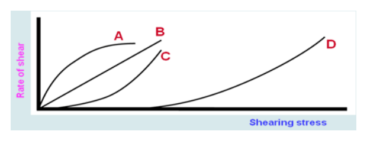
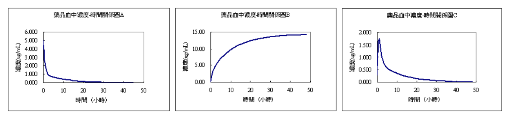
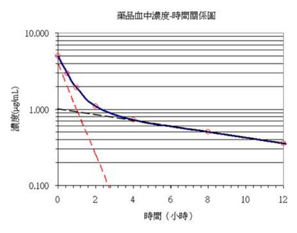
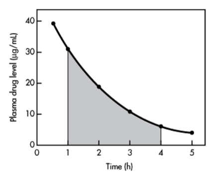
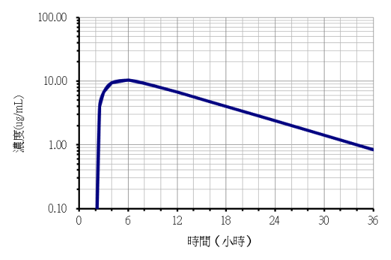
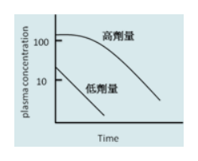

開卷有益 ／
藥師 ／ 藥劑學與生物藥劑學 ／ 103 年第 1 次103 年第 1 次藥師藥劑學與生物藥劑學試題與答案
這一頁是民國 103 年第 1 次藥師藥劑學與生物藥劑學的整份歷屆試題，共 80 題，題目與標準答案出自考選部「國家考試試題及測驗式試題答案」開放資料，其中 76 題附有詳解。以下逐題列出題幹、選項與答案；要計時作答或記錄成績，請用線上練習。
考選部原始場次代碼：103020
線上作答這一科 →
全部 80 題
第 1 題
請問下列何者最重？
（A） 2公斤（B） 3磅（C） 80盎司（D） 1500000毫克答案：（C）
詳解與考點 正解：比較重量前先統一為 kg。A 為 2 kg；B 為 3 lb × 0.453592 kg/lb = 1.361 kg；C 為 80 oz × 0.028350 kg/oz = 2.268 kg；D 先換算 1500000 mg ÷ 1000 mg/g = 1500 g，再換算 1500 g ÷ 1000 g/kg = 1.5 kg。C 的 2.268 kg 最大，故選 C。
A：2 kg 已大於 B 與 D，但仍小於（C）換算後的 2.268 kg。
B：3 lb 換算為 1.361 kg，未達（C）的 2.268 kg；分辨關鍵在磅不是公斤。
D：1500000 mg 等於 1.5 kg，不是 1500 kg，因此小於（C）。
本題考點：質量單位換算（mass unit conversion）——比較前必須統一單位，常用關係為 1 kg = 1000 g、1 g = 1000 mg；英制重量換算（avoirdupois conversion）——lb 與 oz 都不能直接和 kg 比大小，換算後再排序。
第 2 題
製劑中所含乙醇量百分數是指於何溫度（℃）下之量測值？
（A） 15.56（B） 20.00（C） 25.00（D） 25.56答案：（A）
詳解與考點 正解：乙醇體積會隨溫度改變，製劑中乙醇百分數的標準量測溫度為 15.56℃，相當於 60°F，故選 A。
B：20.00℃可作為其他物理量或其他制度的參考溫度，但不是本題乙醇百分數所用的標準。
C：25.00℃常見於實驗操作條件，不能取代乙醇濃度定義中的指定溫度。
D：25.56℃不對應乙醇百分數的標準量測溫度。
本題考點：乙醇濃度標準溫度（alcoholic strength reference temperature）——體積百分數受熱膨脹影響，遇到製劑乙醇量應回到規定的參考溫度；溫度換算（temperature conversion）——60°F 對應 15.56℃，可用來辨認藥劑學中的傳統標準。
第 3 題
若藥品於25℃時，溶質1 g能溶於溶劑30~100 mL中者，則依溶解度的表示法應屬於下列何者？
（A） 易溶（freely soluble）（B） 可溶（soluble）（C） 略溶（sparingly soluble）（D） 微溶（slightly soluble）答案：（C）
詳解與考點 正解：藥典依溶解 1 g 溶質所需溶劑量分級，1～10 mL 為易溶、10～30 mL 為可溶、30～100 mL 為略溶、100～1,000 mL 為微溶；題目給的 30～100 mL 正落在略溶（sparingly soluble）的範圍，故選 C。
A：易溶（freely soluble）對應的溶劑量是 1～10 mL，遠小於題目給的範圍。
B：可溶（soluble）對應 10～30 mL，仍比題目給的下限 30 mL 小。
D：微溶（slightly soluble）對應 100～1,000 mL，是題目範圍再往上一階，溶劑用量更大。
本題考點：藥典溶解度分級（USP solubility classification）——判準是溶解 1 g 溶質所需溶劑體積落在哪個區間，區間由小到大依序是極易溶、易溶、可溶、略溶、微溶、極微溶、幾乎不溶，記住區間邊界比記中文名稱本身更可靠。
第 4 題 待校
藥典中有關吐根糖漿（ipecac syrup）之製備，可加入下列何者以防止不具療效之抽出物沉澱？
（A） 丙酮（acetone）（B） 酒精（alcohol）（C） 甘油（glycerin）（D） 丙二醇（propylene glycol）答案：（C）
第 5 題
有關強碘溶液（strong iodine solution）之敘述，下列何者錯誤？
（A） 又稱為複方碘溶液（B） 每100 mL中含碘4.5~5.5 g和碘化鉀9.5~10.5 g（C） 別名為Lugol's Solution（D） 本溶液是以滅菌溶解法（simple solution with sterilization）製備答案：（D）
詳解與考點 正解：本題要找錯誤敘述；強碘溶液是以碘與碘化鉀配成的複方碘溶液，製備屬 simple solution，不以滅菌作為其製程要件，故選 D。
A：強碘溶液可稱複方碘溶液，名稱敘述正確，故非答案。
B：題示每 100 mL 的碘與碘化鉀含量範圍符合強碘溶液的組成敘述，故非答案。
C：Lugol's Solution 是強碘溶液的常用別名，敘述正確，故非答案。
本題考點：強碘溶液（strong iodine solution）——以碘和碘化鉀組成、Lugol's Solution 別名辨認製劑；單純溶液製備（simple solution）——成分直接溶解成溶液時，不能因為是液體製劑就推論必須採滅菌溶解法。
第 6 題
以輔助溶解法（alternate solution method）製備芳香水劑時，利用滑石粉或濾紙漿之目的為何？
（A） 吸附水溶液中的雜質（B） 幫助過濾和增進揮發油的分散（C） 去除不良的味道（D） 增加膠質的溶解度答案：（B）
詳解與考點 正解：芳香水劑的揮發油在水中分散困難；輔助溶解法加入滑石粉或濾紙漿，可提供助濾作用並協助揮發油均勻分散，故選 B。
A：去除水溶液雜質主要須依雜質性質選擇適當吸附或純化方法，不是滑石粉與濾紙漿在本法的主要目的。
C：兩者不屬於專門矯正或去除不良味道的賦形劑。
D：滑石粉與濾紙漿不以增加膠質溶解度為功能；本題處理的是揮發油分散與過濾。
本題考點：輔助溶解法（alternate solution method）——處理揮發油水劑時，應同時考慮油相分散與澄清過濾；芳香水劑（aromatic waters）——賦形劑功能須依製劑問題判斷，助濾與分散不能誤當成矯味或增溶。
第 7 題
依藥典規定，下列何者不是以浸漬法製成之酊劑（tinctures）？
（A） 甜橙皮酊（sweet orange peel tincture）（B） 吐魯香膠酊（tolu balsam tincture）（C） 顛茄酊（balladonna tincture）（D） 複方安息香酊（compound benzoin tincture）答案：（C）
詳解與考點 正解：依題目所依的藥典製法，顛茄酊以滲漉法取得有效成分，不是以浸漬法製成，故選 C。
A：甜橙皮酊列為浸漬法製成的酊劑，敘述所問的「不是」不適用於（A）。
B：吐魯香膠酊屬浸漬法製備的例子，不能作為本題答案。
D：複方安息香酊也是浸漬法製成；分辨關鍵在顛茄酊的滲漉萃取方式不同。
本題考點：酊劑製法（tincture preparation）——先分浸漬法與滲漉法，再以各製劑的規定製程判斷；滲漉法（percolation）——需要較完整、連續萃取時，不能與單純浸漬混為一談。
第 8 題
下列有關顛茄酊劑（belladonna tincture）製備之敘述，何者較正確？
（A） 製備時以滲漉法較適宜（B） 抽提時宜以稀醇及少量甘油之混合溶劑為滲漉液（C） 抽提前宜先將顛茄葉浸漬三天（D） 本製劑最終產物每100 mL含有相當於原顛茄葉50 g之效價答案：（A）
詳解與考點 正解：顛茄酊的有效成分須自顛茄葉萃取，依其製劑特性以滲漉法較能持續而完整地取得萃取液，故選 A。
B：顛茄酊規定以稀醇（diluted alcohol）為滲漉液；甘油是含鞣質藥材才用到的溶媒調整成分，並非本品的規定組成，故 B 錯誤。
C：滲漉前確有使藥材均勻潤濕的步驟，但預浸時間不是固定寫成 3 天；兩者不能視為相同的製程描述。
D：顛茄酊規定每 100 mL 相當於顛茄葉 10 g，並將生物鹼含量調整至約 27~33 mg/100 mL；選項所列的 50 g 高出 5 倍，故 D 錯誤。
本題考點：顛茄酊（belladonna tincture）——遇到葉類藥材酊劑時，應以其規定萃取製程判斷，不可只憑「浸漬」字樣；滲漉法（percolation）——藥材先潤濕後讓溶媒連續通過，和任意延長預浸時間是不同概念；酊劑的規定溶媒與效價——顛茄酊以稀醇為滲漉液，每 100 mL 相當於顛茄葉 10 g，溶媒與濃度都是可直接核對的判準。
第 9 題
50%的甘油水性溶液，25℃時以毛細管黏度計測得黏度值為54.4 cp，則該溶液屬於下列何種流體？
（A） 牛頓流體（B） 塑性流體（C） 假塑性流體（D） 擴張性流體答案：（A）
詳解與考點 正解：50% 甘油水性溶液為均一的真溶液，毛細管黏度計量得的黏度可視為與剪切速率無關，符合牛頓流體特性，故選 A。
B：塑性流體須先克服屈服應力才開始流動，單純甘油水溶液沒有此結構性門檻。
C：假塑性流體會隨剪切速率增加而黏度下降，常見於高分子或結構性分散系；甘油真溶液不屬此類。
D：擴張性流體在剪切速率增加時黏度上升，通常與高濃度固體分散系相關，不是本題的均一溶液行為。
本題考點：牛頓流體（Newtonian fluid）——真溶液若黏度不隨剪切速率改變，即歸為牛頓流體；非牛頓流體（non-Newtonian fluid）——先看是否有屈服應力、剪切變稀或剪切變稠，再區分塑性、假塑性與擴張性流體。
第 10 題
製備懸液劑時，可添加下列何物質，以減少質粒的沉澱？
（A） 凝絮劑（B） 助溶劑（C） 濕潤劑（D） 稠化劑答案：（D）
詳解與考點 正解：降低懸液劑粒子沉降速度的直接方法是提高分散媒黏度；依 Stokes' law，沉降速度 v = 2r²(ρp-ρm)g/(9η)，η 增加時 v 下降，因此加入稠化劑可減少沉澱，故選 D。
A：凝絮劑使粒子形成鬆散絮團，主要用於減少結塊與改善再分散性，並非直接靠降低沉降速度達成效果。
B：助溶劑用於改善溶質溶解度，不能作為減少懸液粒子沉降的主要手段。
C：濕潤劑幫助疏水性粉末被分散媒潤濕，改善初始分散，但不會像稠化劑一樣直接提高媒液黏度。
本題考點：Stokes' law——懸液沉降速度與媒液黏度 η 成反比，提高 η 可減慢沉降；稠化劑（thickening agent）——用於增加分散媒黏度，和用於潤濕或形成絮團的賦形劑作用不同。
第 11 題
依下圖流變學之各種曲線，B曲線代表物質的何種特性？

（A） Newtonian flow（B） Plastic flow（C） Pseudoplastic flow（D） Dilatant flow答案：（A）
詳解與考點 正解：同一張流變學圖中，曲線 B 是一條通過原點的直線，剪切速率與剪應力呈固定比例、斜率（即黏度倒數）維持不變，這正是 Newtonian flow 的定義特徵，故選 A。
B：Plastic flow 對應曲線 D，圖上先沿橫軸貼平一段、需要先克服一個降伏應力（yield stress）才開始流動，曲線 B 從原點就有固定斜率，沒有這段水平的降伏前區間。
C：Pseudoplastic flow 對應曲線 C，起始貼近橫軸、隨應力增加斜率愈來愈陡（凹向上），與曲線 B 全程斜率不變的直線走勢不同。
D：Dilatant flow 對應曲線 A，起始斜率最大、隨應力增加反而轉平（凹向下），同樣不是曲線 B 這種等速直線。
本題考點：牛頓流體的判準（Newtonian flow）——剪切速率與剪應力成正比、通過原點的直線，黏度為與剪切速率無關的常數；與其餘三種非牛頓流體（塑性、擬塑性、脹流性）的分辨關鍵在於直線 vs. 有降伏應力 vs. 凹向上 vs. 凹向下的曲線形狀差異。
第 12 題
有關acacia添加製備乳劑濕膠法（wet gum method）之描述，下列何者正確？
（A） Acacia以二等分比例添加於乳劑中（B） 內相慢慢加入外相（C） Acacia需與油相先混和（D） 此法亦稱為大陸法（continental method）答案：（B）
詳解與考點 正解：acacia 的濕膠法先以水和 acacia 製成膠漿，使水相成為外相，再將油相這一內相緩慢加入並研磨乳化，故選 B。
A：以固定油製乳劑時，油、水、膠的基準比例為 4:2:1，acacia 約為油量的四分之一，並非以二等分比例添加，故 A 錯誤。
C：先把 acacia 與油相混和是乾膠法的步驟；濕膠法的分辨關鍵在先形成水性膠漿。
D：大陸法（continental method）是乾膠法的別名，不是濕膠法。
本題考點：濕膠法（wet gum method）——先將 acacia 與水製成外相膠漿，再緩慢加入油相；乾膠法（dry gum method）——先混合 acacia 與油相，別名為 continental method，流程與濕膠法相反。
第 13 題
下列對於懸液劑之敘述何者錯誤？
（A） 製劑很適合於小孩及老人使用（B） 製劑的劑量具彈性（C） 製劑的矯味劑可以選擇（D） 製劑的化學安定性較溶液劑差答案：（D）
詳解與考點 正解：本題要找錯誤敘述；懸液劑中多數藥物維持未溶狀態，通常比藥物完全溶解的溶液劑更有利於降低化學分解，因此（D）說化學安定性較差不正確，故選 D。
A：懸液劑可免除吞嚥固體劑型的困難，經適當設計後適合小孩及老人使用；敘述正確，故非答案。
B：液體劑型可依處方範圍調整取用量，劑量彈性是其優點之一；敘述正確，故非答案。
C：懸液劑可選擇適當矯味劑改善服用性，敘述正確，故非答案。
本題考點：懸液劑化學安定性（chemical stability of suspensions）——藥物在未溶狀態的比例較高時，常比完全溶解時更不易發生溶液相分解；懸液劑特性（suspension dosage form）——化學安定性、物理沉降與再分散性是不同判準，不能混為一談。
第 14 題
下列何者之臨界微膠體濃度值最高？
（A） n-C8H17SO3Na（B） n-C10H21SO3Na（C） n-C12H25SO3Na（D） n-C12H25O(CH2CH2O)8H答案：（A）
詳解與考點 正解：同系的烷基磺酸鈉（sodium alkyl sulfonate，R-SO3Na）界面活性劑中，烴鏈越短，疏水驅動越弱，越需要較高濃度才會形成微膠粒。n-C8H17SO3Na 的烴鏈最短，臨界微膠體濃度最高，故選 A。
B：n-C10H21SO3Na 的烴鏈比（A）長，形成微膠粒的疏水驅動較強，CMC 因而較低。
C：n-C12H25SO3Na 的烴鏈再更長，和（A）相比更容易聚集成微膠粒，不會有最高 CMC。
D：n-C12H25O(CH2CH2O)8H 雖為非離子型界面活性劑，但其 C12 烴鏈提供較強疏水性；不能因頭基不同而忽略其相較（A）較易微膠化的趨勢。
本題考點：臨界微膠體濃度（critical micelle concentration, CMC）——同系界面活性劑比較時，先看疏水烴鏈長度，鏈越短通常 CMC 越高；界面活性劑結構效應（surfactant structure effect）——烴鏈促進聚集，親水頭基則調節其溶解與聚集行為，兩者須一起評估；磺酸鹽與硫酸酯鹽的區別——R-SO3Na 為烷基磺酸鈉，R-OSO3Na 才是硫酸酯型（如 SDS 為 C12H25OSO3Na），兩者不可混用。
第 15 題
下列幾種藥劑製備操作過程中，何者之切變速率（shear rate）最大？
（A） 將軟膏塗在皮膚上（B） 經皮下注射針流出（C） 從薄金屬瓶中擠軟膏（D） 自瓶中倒出答案：（B）
詳解與考點 正解：經皮下注射針的內徑極小，液體在針管中心與管壁之間形成最陡的速度梯度；切變速率（shear rate）就是相鄰流層的速度差除以其間距。狹窄針腔內的流動因此比其他操作有更高的切變速率，（B）最符合此判準，故選 B。
A：將軟膏塗於皮膚時雖會產生剪切，但流動發生在較寬的接觸面，沒有極窄管腔所造成的陡峭速度梯度。
C：從薄金屬瓶擠出軟膏需要施力，惟出口通常遠大於皮下注射針的內徑，軟膏流層間的速度差不會同樣集中。
D：自瓶中倒出主要是重力造成的較寬口流動，流速與速度梯度通常都較小。
本題考點：切變速率（shear rate）——比較製程剪切時，先看流動通道是否狹窄；速度梯度（velocity gradient）——在相近流量下，流體通過較小內徑時，管壁至中心的速度變化較急。
第 16 題
下列何類藥物之經皮吸收能力最易受其載體組成物影響？
（A） 類固醇（B） 四環類抗生素（C） 局部麻醉劑（D） 蛋白質類藥物答案：（A）
詳解與考點 正解：類固醇多具脂溶性，進入皮膚角質層的分配行為會隨軟膏、乳膏或其他載體的油水組成而明顯改變；載體既影響藥物自劑型釋放，也影響其與皮膚間的分配。因此（A）之經皮吸收最容易受載體組成影響，故選 A。
B：四環類抗生素通常偏親水且易受角質層屏障限制，經皮吸收本來就有限，載體改變較難成為主要決定因素。
C：局部麻醉劑的經皮通過會受游離型比例與脂溶性影響，但本題比較的是對載體組成最敏感的類別，類固醇與載體的分配差異更具代表性。
D：蛋白質類藥物分子大且親水，角質層是首要障礙；單純改變一般載體通常不足以大幅改善其經皮吸收。
本題考點：經皮藥物傳遞（transdermal drug delivery）——先判斷藥物能否在載體與角質層之間有效分配；載體效應（vehicle effect）——脂溶性外用藥的釋放與皮膚分配，常隨油水組成和基劑性質改變。
第 17 題
那一個不是中華藥典第七版之可可脂栓劑製備法？
（A） 濕式打錠法（B） 捏合法（C） 壓製法（D） 熔合法答案：（A）
詳解與考點 正解：依題目所指的中華藥典第七版，可可脂栓劑可用捏合法、壓製法或熔合法製備；這些方法都以可可脂基劑填入或壓入栓劑模為核心。（A）濕式打錠法是錠劑製備時先造粒再壓錠的程序，不是可可脂栓劑的製備法，故選 A。
B：捏合法可在不經加熱熔融的情況下，把藥物與可可脂基劑混合後填入模具，屬本題所列的栓劑製法。
C：壓製法利用壓力把可塑性基劑與藥物壓入模穴，可用於可可脂栓劑。
D：熔合法先使基劑熔融、混入藥物後再灌模冷卻成型，是可可脂栓劑的常用方法。
本題考點：可可脂栓劑製備（cocoa butter suppository preparation）——先辨認方法是否以栓劑模具成型，而非以造粒壓錠為目的；熔合法（fusion method）——基劑可安全熔融時，以灌模冷卻完成定型。
第 18 題
當可可脂添加酚製作栓劑時，宜添加下列何者作為硬化劑？
（A） 蜂蠟（B） 明膠（C） 硬脂酸（D） 鯨臘醇答案：（A）
詳解與考點 正解：酚加入可可脂後會使基劑軟化並降低其適合成型的硬度，需加入熔點較高的硬化劑補強。蜂蠟可提高基劑的硬度與耐熱性，因此（A）是可可脂酚栓劑的適當硬化劑，故選 A。
B：明膠主要用於明膠甘油栓劑等水溶性基劑系統，不是用來校正可可脂受酚軟化的標準硬化劑。
C：硬脂酸可作為多種劑型的脂質性賦形劑，但本題的可可脂加酚配方要補償軟化時，並非以它作為指定的硬化劑。
D：鯨臘醇（cetyl alcohol）為脂肪醇，主要作為乳劑與半固體製劑的稠度調節與輔助乳化劑；可可脂受酚軟化時所用的是熔點較高的蠟類，如蜂蠟／白蠟（熔點約 62~65 ℃）或鯨蠟（spermaceti），字面相近的鯨臘醇不可代換，故 D 錯誤。
本題考點：可可脂基劑（cocoa butter base）——遇到會使基劑變軟或降低熔點的添加物時，要評估是否需硬化劑；硬化劑（hardening agent）——選擇熔點較高且可與脂質基劑相容的成分，以維持栓劑成型與貯存穩定性。
第 19 題
假設栓劑之模子體積固定，一粒空白可可脂栓劑重2 g，acetaminophen/可可脂之相對密度0.6，每粒栓劑含acetaminophen 300 mg，栓劑 成品每粒多少g重？
（A） 1.8（B） 2.0（C） 2.2（D） 2.3答案：（A）
詳解與考點 正解：模子體積固定時，加入藥物必須先扣除其排開的可可脂。每粒 acetaminophen 為 300 mg = 0.300 g；依題給相對密度 0.6，排開的可可脂重量為 0.300 g / 0.6 = 0.500 g。原本空白栓劑含可可脂 2.000 g，故剩餘可可脂為 2.000 g - 0.500 g = 1.500 g；成品重量為 1.500 g + 0.300 g = 1.800 g，故選 A。
B：2.0 g 相當於把藥物視為與可可脂等重置換，沒有使用題目給的 0.6 排置關係。
C：2.2 g 未依 0.300 g / 0.6 算出被排開的 0.500 g 可可脂，與固定模子體積的條件不符。
D：2.3 g 是將 0.300 g 藥物直接加到 2.000 g 空白基劑的結果，忽略了藥物會排開部分可可脂。
本題考點：栓劑置換值（displacement value）——模穴體積固定時，加入藥物前先算其排開的基劑重量；單位換算（unit conversion）——計算前先將 300 mg 統一為 0.300 g，才能和基劑重量相加減。
第 20 題
下列何者最常用作為陰道栓劑之基劑？
（A） 可可脂（B） 聚乙二醇（C） 氫化脂肪酸（D） 氫化植物油答案：（B）
詳解與考點 正解：陰道栓劑常選用水溶性且在體溫下不致整塊熔融外漏的基劑。聚乙二醇（polyethylene glycol）可在陰道液中逐漸溶解並釋放藥物，因此（B）是最常用的陰道栓劑基劑，故選 B。
A：可可脂是脂肪性基劑，受體溫影響會熔融，較常見於需要熔融釋放的栓劑，不是本題所問最常用的陰道基劑。
C：氫化脂肪酸屬脂質性基劑，雖可用於部分栓劑，但陰道劑型通常較重視水溶性基劑的溶解釋放與較少滲漏。
D：氫化植物油同樣是脂肪性基劑，釋放方式以熔融或脂質分散為主，與（B）的水溶性使用考量不同。
本題考點：陰道栓劑基劑（vaginal suppository base）——需要減少油脂熔融外漏時，優先考慮水溶性基劑；聚乙二醇（polyethylene glycol）——藉由體液溶解而非體溫熔融釋放藥物。
第 21 題
下列何者可預防聚乙二醇栓劑因加水而造成之結晶或硬度改變？
（A） Chloral hydrate（B） Ethylene oxide（C） Hexanetriol（D） Polysorbate 80答案：（C）
詳解與考點 正解：聚乙二醇栓劑吸入水分後可能再結晶，造成硬度或脆性改變；加入可與聚乙二醇相容的多元醇，可減少此類結晶性變化。Hexanetriol 具有此調節與增塑作用，因此（C）可預防因加水造成的結晶或硬度改變，故選 C。
A：Chloral hydrate 是藥物成分，不是用來穩定聚乙二醇栓劑結晶狀態的標準添加物。
B：Ethylene oxide 是製備聚乙二醇的單體，並非成品栓劑中用來控制硬度的賦形劑。
D：Polysorbate 80 的主要用途是界面活性與助溶，不能取代（C）對聚乙二醇結晶與硬度的調節功能。
本題考點：聚乙二醇栓劑（polyethylene glycol suppository）——遇到吸濕後可能結晶變硬的配方，要選能維持柔韌性的相容性添加物；增塑作用（plasticization）——藉由改變高分子鏈間作用，降低脆裂或硬度突變的風險。
第 22 題
甘油栓劑可用作通便劑，其作用機轉為甘油具有下列何種作用？
（A） Dehydrating effect（B） Hydrating effect（C） Dehygroscopicity effect（D） Lubricant effect答案：（A）
詳解與考點 正解：甘油具強吸濕性與高滲透壓，置入直腸後會從周圍組織吸引水分，造成局部脫水刺激並促進排便反射。此通便機轉稱為 dehydrating effect，因此（A）正確，故選 A。
B：甘油確實會吸引水分，但本題問的是其作為甘油栓劑的機轉名稱；局部刺激來自脫水效應，而非 hydrating effect。
C：Dehygroscopicity effect 並非甘油栓劑的通便機轉，且其字義與甘油的吸濕特性相反。
D：潤滑可幫助排便，但甘油栓劑的主要藥理作用是高滲造成的局部脫水刺激，不是單純的 lubricant effect。
本題考點：甘油栓劑（glycerin suppository）——判斷通便機轉時，先看成分是否具高滲與吸濕性；滲透性通便（osmotic laxation）——由局部水分移動與刺激引發排便反射，而非只靠潤滑。
第 23 題
依中華藥典第七版，標誌重量100克的軟膏劑，進行重量差異試驗，第一階段取檢品10個，各容器藥品淨重不得低於標誌重量的a%；如不能 符合上述規定，第二階段再取檢品20個，總計30個，各容器藥品淨重低於標誌重量的a%之檢品數不得超過b個，（a，b）為多少？
（A） （90，1）（B） （90，3）（C） （95，1）（D） （95，3）答案：（C）
詳解與考點 正解：依題目所指中華藥典第七版，標誌重量為 100 g 的軟膏劑，第一階段 10 個檢品各自不得低於標誌重量的 95%；下限為 100 g × 95% = 95 g。若進入第二階段，合計 30 個檢品中低於 95% 者不得超過 1 個，因此（a，b）為（95，1），故選 C。
A：95% 才是本題規定的單一容器重量下限，將 a 寫為 90 會把允收範圍放寬過度。
B：此選項同時把下限改為 90%，並容許 3 個檢品低於下限，兩項都不符題示標準。
D：雖保留了 95% 的下限，但第二階段合計 30 個檢品可低於下限的數量不是 3 個。
本題考點：軟膏劑重量差異試驗（ointment weight variation test）——先將標誌重量乘上規定百分比，換算每一容器的最低淨重；分階段抽樣（two-stage sampling）——第二階段要以累計檢品數與允許不合格數判定，不能只看新增檢品。
第 24 題
下列何者是組成咀嚼錠（chewable tablets）的最常見主要成分？
（A） Glucose（B） Mannitol（C） Lactose（D） Sucrose答案：（B）
詳解與考點 正解：咀嚼錠需要填充劑兼具可壓性、適口的甜味與咀嚼時的清涼口感。Mannitol 溶解時有吸熱感、甜度適中且不易吸濕，因此（B）是咀嚼錠最常見的主要成分，故選 B。
A：Glucose 雖具甜味，但較易吸濕且可能帶來黏性，作為咀嚼錠主要填充劑的使用性不如（B）。
C：Lactose 是常見錠劑填充劑，但甜味與口感不如 mannitol 適合直接咀嚼的劑型。
D：Sucrose 也能提供甜味，惟其吸濕性、黏性與齲齒考量，使其不是咀嚼錠最常用的主要填充劑。
本題考點：咀嚼錠（chewable tablet）——選擇主要填充劑時，同時評估壓錠性與入口口感；甘露醇（mannitol）——因清涼感、適口性與低吸濕性，特別適合需要咀嚼的錠劑。
第 25 題
下列有關以高分子材質製備包衣微粒之敘述，何者正確？
（A） 不宜使用高分子之水性分散懸浮液作為微粒之包衣材質（B） 微粒包衣層中通常不需加入塑化劑（C） 微粒包衣層中只適合使用單一種之高分子材質（D） 包衣之微粒可在混合適當賦型劑後製備成錠劑答案：（D）
詳解與考點 正解：高分子包衣微粒在選擇適當的填充劑、緩衝材料與壓錠條件後，可以再壓製成錠劑；關鍵是保護包衣不因壓力破裂。（D）正確描述了微粒包衣後仍可進一步製成錠劑的可行性，故選 D。
A：高分子的水性分散懸浮液可作為包衣材料，這類水性系統常用來避免使用有機溶媒。
B：包衣膜通常需要加入塑化劑，以改善成膜性與柔韌性，避免乾燥或壓錠時出現脆裂。
C：不同高分子可混用以調整溶解性、膜強度或藥物釋放速率，並非只適合單一高分子。
本題考點：微粒包衣（multiparticulate coating）——評估後續壓錠時，要看包衣膜能否承受壓縮應力；塑化劑（plasticizer）——用於增加高分子膜的柔韌性，降低裂紋造成的釋放失控。
第 26 題
下列何者是製備錠片最常用的潤滑劑（lubricants）？
（A） Stearic acid（B） Magnesium stearate（C） Talc（D） Sodium stearyl fumarate答案：（B）
詳解與考點 正解：錠劑潤滑劑的目的在降低粉體與沖模表面的摩擦，幫助壓錠後順利推出。Magnesium stearate 具良好潤滑性、用量低且使用普遍，因此（B）是製備錠片最常用的潤滑劑，故選 B。
A：Stearic acid 具有潤滑性，但在錠劑製程中的普及度與潤滑效率通常不及 magnesium stearate。
C：Talc 主要作為助流劑與抗黏著劑，雖可減少部分摩擦，卻不是最常用的主要潤滑劑。
D：Sodium stearyl fumarate 也是可用的潤滑劑，誘答點在於它並非錠劑製備中最常見的選項。
本題考點：潤滑劑（lubricant）——功能是降低粉體與沖模的摩擦，不等同於改善粉體流動；硬脂酸鎂（magnesium stearate）——以低用量提供有效潤滑，是常見錠劑賦形劑。
第 27 題
下列何者不是常用的直壓用（direct compression）的填充劑（filler）？
（A） Spray-dried lactose（B） Microcrystalline cellulose（C） Maize starch（D） Crystalline maltose答案：（C）
詳解與考點 正解：直壓用填充劑必須有足夠流動性與可壓性，才能不經濕式或乾式造粒直接壓成錠。Maize starch 的原生粉體流動與壓縮性較差，通常較適合作為崩散劑或製粒輔料，因此（C）不是常用的直壓用填充劑，故選 C。
A：Spray-dried lactose 經噴霧乾燥後具較佳流動與可壓性，是常見的直壓級填充劑。
B：Microcrystalline cellulose 可塑性變形佳、結合力強，適合用於直接壓錠。
D：Crystalline maltose 具可供直接壓錠的結晶性與壓縮特性，與原生 maize starch 的製程適用性不同。
本題考點：直接壓錠（direct compression）——填充劑需同時滿足流動性與可壓性，否則應先製粒；原生澱粉（native starch）——常用於崩散或製粒輔助，不能只因可作為賦形劑就視為直壓級填充劑。
第 28 題
下列有關osmotic pump錠劑之敘述何者正確？
（A） 半透膜可在腸胃道中逐漸溶解及吸收（B） 藥物釋放速率和藥物擴散通透半透膜之速率相同（C） 在核心及半透膜間不適合加上其他包衣層（D） 媒液通透半透膜速率和媒液之pH值無關答案：（D）
詳解與考點 正解：osmotic pump 錠藉由半透膜讓水分進入核心，形成滲透壓後把藥物經釋放孔推出；水的通透與驅動機制在設計上不依賴腸胃道媒液的 pH。因此（D）正確，故選 D。
A：半透膜的功能是選擇性通過水分而保持膜結構，通常不以在腸胃道溶解吸收為設計目的。
B：藥物不是靠擴散穿越半透膜釋放，而是水分進入後產生的滲透壓將核心內容物推出釋放孔。
C：核心與半透膜之間可以依設計加入其他功能性包衣層，例如調整釋放延遲或保護性質，不能一概認為不適合。
本題考點：滲透壓幫浦錠（osmotic pump tablet）——先分清水分穿過半透膜與藥物由釋放孔排出的路徑；pH-independent release——以滲透壓驅動的設計，可降低腸胃道 pH 對釋放速率的影響。
第 29 題
以球磨機研磨固體粉末時，下列敘述何者最不適當？
（A） 研磨效率深受轉動速率影響（B） 球壺內容物容量占45~55%時研磨效率較佳（C） 研磨用球之密度越大，則研磨效率通常越佳（D） 不適用於溼式研磨為其主要缺點答案：（D）
詳解與考點 正解：球磨機既可用於乾式研磨，也可用於濕式研磨；加入適當液體可協助分散並控制粉塵。因此（D）把不適用於濕式研磨說成其主要缺點，與球磨機的用途不符，是最不適當的敘述，故選 D。
A：球磨效率受轉動速率影響，轉速會改變研磨球的拋落、撞擊與摩擦型態。
B：球壺內物料與研磨球需保留足夠運動空間，內容物占適當比例時較能兼顧撞擊與研磨效率。
C：研磨球密度較大時，在相近運動條件下可提供較大的撞擊能量，通常有利於研磨。
本題考點：球磨（ball milling）——判斷設備適用性時，先區分它能否處理乾式與濕式系統；臨界轉速（critical speed）——轉速會決定研磨球是有效拋落撞擊或隨筒壁空轉，直接影響效率。
第 30 題
下列何者是正確的糖衣包覆（sugar coating）程序？（防水層：sealing；底衣層：subcoating；平滑層：smoothing；磨光層：polishing）
（A） 防水層-底衣層-平滑層-磨光層（B） 平滑層-防水層-底衣層-磨光層（C） 底衣層-平滑層-磨光層-防水層（D） 磨光層-防水層-平滑層-底衣層答案：（A）
詳解與考點 正解：糖衣包覆先以防水層隔絕錠芯與後續含水糖漿，再用底衣層建立外形、平滑層修整表面，最後才磨光。因此正確順序是 sealing → subcoating → smoothing → polishing，即（A）防水層－底衣層－平滑層－磨光層，故選 A。
B：平滑層應在底衣層建立形狀後才進行，且防水層不能排在平滑層之後。
C：底衣層之前需要先完成防水處理，磨光又必須作為最終表面處理，不能在防水層之前完成。
D：磨光層是最後的外觀處理，若先磨光，後續防水與平滑程序會破壞其表面。
本題考點：糖衣（sugar coating）——程序判斷要依錠芯保護、外形建立、表面修整與外觀完成的先後關係；防水層（sealing）——在接觸含水糖漿前先保護錠芯，避免受潮或成分遷移。
第 31 題
下列各胰島素製劑，那一個起始作用時間最快？
（A） Insulin－zinc（B） Insulin lispro（C） Isophane insulin（D） Insulin glargine答案：（B）
詳解與考點 正解：Insulin lispro 是速效胰島素類似物，皮下注射後較容易由聚集狀態解離為可吸收單體，起始作用最快。因此（B）符合速效製劑的吸收特性，故選 B。
A：Insulin-zinc 形成較穩定的含鋅聚集型態，吸收較慢，不屬起始作用最快的製劑。
C：Isophane insulin 為中效製劑，藉由 protamine 複合物延緩皮下注射部位的吸收。
D：Insulin glargine 為長效製劑，注射後形成沉澱庫並持續釋放，起始作用不及 insulin lispro 快。
本題考點：速效胰島素類似物（rapid-acting insulin analogue）——比較起始作用時，先看製劑是否能快速解離並被皮下吸收；胰島素製劑吸收（insulin absorption）——延緩吸收的 protamine、鋅或沉澱庫設計，會使起效時間延後。
第 32 題
在無菌油性懸浮液中添加aluminum stearate之主要目的為何？
（A） 增稠劑（B） 抗氧化劑（C） 抗還原劑（D） 螯合劑答案：（A）
詳解與考點 正解：無菌油性懸浮液中的固體粒子容易沉降，aluminum stearate 可使油相增稠並形成較有結構的分散介質，藉此減慢沉降。因此（A）增稠劑是其主要目的，故選 A。
B：抗氧化劑的用途是抑制油脂或藥物氧化，aluminum stearate 不以提供抗氧化保護為主要功能。
C：抗還原劑不是油性懸浮注射劑中 aluminum stearate 的功能分類，也無法說明其對沉降的作用。
D：螯合劑用於結合可能催化降解的金屬離子，與 aluminum stearate 提高油相黏度的目的不同。
本題考點：油性懸浮液（oily suspension）——要減少粒子沉降，優先評估分散介質黏度與結構性；增稠劑（thickening agent）——提高連續相黏度可降低粒子沉降速率，但仍須兼顧可注射性。
第 33 題
下列何者是用來提供主動免疫力（active immunity）的？
（A） 免疫球蛋白（B） 類毒素（C） 人類免疫血清（D） 破傷風抗毒素答案：（B）
詳解與考點 正解：類毒素（toxoid）是經去毒處理後仍保有抗原性的毒素，接種後會刺激受者自行產生抗體與免疫記憶，屬主動免疫。因此（B）可提供 active immunity，故選 B。
A：免疫球蛋白提供的是已形成的抗體，保護效果來自外來抗體，屬被動免疫。
C：人類免疫血清含有預先存在的特異性抗體，同樣是立即但暫時的被動免疫。
D：破傷風抗毒素是中和毒素的現成抗體製劑，不能使受者建立自身免疫記憶。
本題考點：主動免疫（active immunity）——抗原刺激受者自行產生抗體與記憶細胞時，才屬主動免疫；被動免疫（passive immunity）——直接給予免疫球蛋白或抗毒素可快速保護，但不建立長期免疫記憶。
第 34 題
依據藥典，下列有關純淨水（purified water）之敘述何者最正確？
（A） 是經過滅菌處理之水（B） 可添加抑菌劑（C） 總固體量不得超過10 ppm（D） 必須調為等張答案：（C）
詳解與考點 正解：純淨水（purified water）的規格重點在控制化學性雜質；依題目所引藥典，總固體量不得超過 10 ppm。因此（C）是最正確的敘述，故選 C。
A：純淨水不等同經滅菌處理的水；若製劑需要無菌水，須符合另行規定的無菌要求。
B：純淨水的規格不是以添加抑菌劑維持品質，添加抑菌劑反而會改變水的成分。
D：等張是注射液、眼用製劑等特定劑型的滲透壓要求，並非純淨水本身必須具備的性質。
本題考點：純淨水（purified water）——判斷水質規格時，區分化學純度、微生物控制與無菌性三件事；總固體量（total solids）——以殘留非揮發性物質評估水中溶解性雜質，不能以是否等張替代。
第 35 題
依中華藥典第七版，已進行過注射劑熱原試驗的動物，如有熱原反應，則該動物應休息多久後才能再供試驗之用？
（A） 一天（B） 一星期（C） 兩星期（D） 不能再使用答案：（C）
詳解與考點 正解：依題幹指定的中華藥典第七版，曾出現熱原反應的試驗動物不可立刻重複使用，須先有足夠的恢復與觀察期間；規定的間隔為兩星期，故選 C。
A：一天不足以排除前次熱原反應對體溫反應性的影響，不能符合再次供試驗使用的等待要求。
B：一星期仍短於規定的兩星期。此類規範的判斷重點是曾有熱原反應時要依較長的排除期間處理。
D：有熱原反應不表示該動物永久不得再用；在完成規定休息期後，仍可再供試驗之用。
本題考點：熱原試驗動物再使用（pyrogen test animal reuse）——判斷曾有熱原反應的動物時，先區分暫停使用與永久淘汰，並依該版藥典的等待期處理；熱原反應（pyrogenic response）——重複試驗前須避免前次發熱反應干擾後續體溫判讀。
第 36 題
下列有關「抑菌注射用水」之敘述，何者錯誤？
（A） 包裝不得超過30 mL（B） 是一種無菌注射用水（C） 可添加抑菌劑（D） 新生兒亦可使用此種注射用水答案：（D）
詳解與考點 正解：抑菌注射用水雖為無菌製劑，但其所含抑菌劑可能對新生兒造成風險，因此不適合供新生兒使用；（D）的敘述錯誤，故選 D。
A：抑菌注射用水為多劑量用途的無菌水，包裝容量不得超過 30 mL，以限制單一容器的使用量與保存風險。
B：其基礎製劑是無菌注射用水；「抑菌」是另外加入適當抑菌劑後所具備的性質，並不否定無菌要求。
C：加入抑菌劑正是此製劑與單次使用注射用水的重要差異，目的在抑制使用期間可能引入的微生物生長。
本題考點：抑菌注射用水（bacteriostatic water for injection）——先辨認其為含抑菌劑的無菌稀釋用製劑，不能把抑菌誤當成免除無菌；新生兒用藥安全（neonatal medication safety）——含防腐或抑菌成分的注射用稀釋液不直接套用於新生兒。
第 37 題
下列何者為氣體滅菌法最常使用之滅菌化學物質？
（A） Chlorine dioxide（B） Ethylene oxide（C） Formaldehyde（D） Propylene oxide答案：（B）
詳解與考點 正解：氣體滅菌主要用於不耐高溫或不耐濕熱的器材，Ethylene oxide 能穿透包裝與材料並以烷基化作用破壞微生物，為最常使用的氣體滅菌劑，故選 B。
A：Chlorine dioxide 可作為氧化性消毒或滅菌用途，但不是藥品與醫材氣體滅菌最常用的標準選項。
C：Formaldehyde 亦可作氣體處理，但刺激性、毒性與殘留處理等限制較多，常規使用性不及 Ethylene oxide。
D：Propylene oxide 並非實務上最常用的氣體滅菌化學物質；分辨關鍵在於常規醫材低溫氣體滅菌的代表藥劑是 Ethylene oxide。
本題考點：環氧乙烷滅菌（ethylene oxide sterilization）——遇到熱敏感、濕敏感且需穿透包裝的器材時，優先聯想到 Ethylene oxide；低溫滅菌（low-temperature sterilization）——選擇方法時先看材料是否能承受蒸汽高溫，再判斷是否需要氣體穿透性。
第 38 題
隱形眼鏡保存液中使用edetate sodium的目的為：
（A） 去蛋白（B） 濕潤（C） 殺菌（D） 增稠答案：（C）
詳解與考點 正解：隱形眼鏡保存液中的 edetate sodium 是螯合劑，可結合 Ca2+、Mg2+ 等二價金屬離子，削弱部分細菌細胞膜的穩定性並增強防腐系統的抗微生物效果；題目所問目的歸為殺菌，故選 C。
A：去蛋白通常仰賴蛋白酶或專用清潔系統，不是 edetate sodium 的主要功能。
B：濕潤作用要靠潤濕劑或界面活性成分改善鏡片表面潤滑；螯合金屬離子不會直接提供濕潤性。
D：增稠需要高分子黏度調節劑，與 edetate sodium 的金屬螯合作用不同。
本題考點：EDTA 螯合效應（EDTA chelation）——看到 edetate sodium 時，先聯想金屬離子螯合及其對防腐效果的增強；隱形眼鏡保存液（contact lens solution）——清潔、潤濕、抗微生物與增稠分別由不同類型的賦形劑負責，不可互換。
第 39 題
下列有關高壓滅菌法之敘述，何者錯誤？
（A） 最常被使用之滅菌操作溫度為121℃，20分鐘（B） 工業級高壓滅菌器一般配置有抽真空用pump（C） 溫度測定裝置一般置於高壓蒸汽入口處（D） 滅菌時滅菌時間的計算要在溫度到達所訂定之滅菌溫度時才開始計算答案：（C）
詳解與考點 正解：高壓蒸汽滅菌須確認最不利位置的實際溫度，而非只量測剛進入設備的蒸汽；蒸汽入口的讀值可能高於腔體或負載冷點，不能代表整批均已達到條件，所以（C）錯誤，故選 C。
A：121℃、20 分鐘是本題所列高壓蒸汽滅菌的常用操作條件，判讀時仍須以已驗證的負載條件為準。
B：工業級設備常以真空 pump 移除腔體內空氣，使飽和蒸汽較能均勻接觸負載。
D：滅菌時間應在整個系統到達設定的滅菌溫度後才起算；升溫階段不能併入有效保持時間。
本題考點：蒸汽滅菌溫度監測（steam sterilization temperature monitoring）——監測點要能反映最難達標的冷點，而不是只看蒸汽入口；滅菌保持時間（holding time）——只有在已達設定溫度後的時間才可計入有效滅菌時間。
第 40 題
工業級高壓蒸汽滅菌器在滅菌開始進行時，一般會先以pump將滅菌器內空氣抽掉，其主要目的下列何者正確？
（A） 可以使滅菌器內溫度升高速度加快，較快達到所要求之溫度（B） 可以增強最後之滅菌度（C） 可以避免滅菌過程有氧化反應發生（D） 可以增加高壓蒸汽滅菌操作之安全性答案：（A）
詳解與考點 正解：預先以 pump 抽除空氣可避免空氣稀釋蒸汽並阻礙熱傳，讓飽和蒸汽更快且更均勻地達到要求溫度；（A）正是此步驟最直接的主要目的，故選 A。
B：空氣移除有助於蒸汽有效接觸負載，但最終滅菌度仍由達標溫度、保持時間與負載驗證共同決定，不能把抽真空本身等同於最後滅菌度。
C：抽氣不是為了防止氧化反應；高壓蒸汽滅菌的核心是排除不凝結氣體以改善蒸汽熱傳。
D：此操作的主要功能不是增加設備安全性，而是建立有利於蒸汽升溫與穿透的腔體條件。
本題考點：預真空蒸汽滅菌（pre-vacuum steam sterilization）——若腔體殘留空氣會降低蒸汽熱傳與溫度均一性，應先排除空氣；不凝結氣體（non-condensable gases）——判斷其影響時看是否妨礙飽和蒸汽接觸與冷凝放熱。
第 41 題
靜脈注射液中如含過量熱原，會使病人產生發燒及下列何種症狀？
（A） Hypertension（B） Hypotension（C） Hyperglycemia（D） Hypoglycemia答案：（B）
詳解與考點 正解：過量熱原進入血液後會誘發發炎介質釋放，除發燒與寒顫外，也可造成周邊血管擴張與血壓下降；因此合併症狀為 Hypotension，故選 B。
A：Hypertension 與熱原引起的血管擴張方向相反，不能作為本題所問的典型伴隨反應。
C：Hyperglycemia 不是靜脈注射液熱原反應的主要判別症狀；本題應先把焦點放在發燒伴隨的循環反應。
D：Hypoglycemia 同樣不是熱原反應的典型核心表現，與血壓下降的急性反應不同。
本題考點：熱原反應（pyrogenic reaction）——靜脈製劑出現熱原時，以發燒、寒顫及血流動力學不穩定作為警訊；低血壓（hypotension）——由全身性發炎與血管擴張造成的血壓下降，須與血糖異常分開判讀。
第 42 題
下列何藥之乾粉注射劑溶於注射用水後其pH值最高？
（A） Acyclovir（B） Cefotaxime（C） Indomethacin（D） Piperacillin答案：（A）
詳解與考點 正解：乾粉注射劑復溶後的 pH 取決於藥物鹽類與為維持溶解度所需的調整條件；Acyclovir 注射液復溶後呈明顯鹼性，在四者中 pH 最高，故選 A。
B：Cefotaxime 復溶液不屬於本組中最高 pH 的強鹼性製劑；不能只因其為 β-lactam 抗生素便推定 pH 最高。
C：Indomethacin 的酸鹼特性與其製劑鹽型須分開看，但其復溶液並非本題四者中 pH 最高者。
D：Piperacillin 復溶後的 pH 亦低於 Acyclovir；同屬注射用抗感染藥物不代表復溶液酸鹼度相同。
本題考點：注射劑 pH（parenteral product pH）——比較復溶液時，以實際鹽型與溶解度調整需求判斷，不能只按藥物治療分類猜測；acyclovir 溶解度（acyclovir solubility）——需要鹼性條件維持溶解度的製劑，復溶後通常呈較高 pH。
第 43 題
下列何種注射給藥途徑為可以經由衛教來教導病人自己投予（self-administration）？
（A） Intramuscular route（B） Intraarterial route（C） Intraspinal route（D） Subcutaneous route答案：（D）
詳解與考點 正解：可由衛教教導病人自行注射的途徑，必須兼顧操作可行性與併發症風險；Subcutaneous route 的解剖位置較表淺，常可經正確衛教後自行投予，故選 D。
A：Intramuscular route 需正確選擇肌肉部位、針長與注射深度，誤入神經或血管的風險較高，非本題的標準自行投予途徑。
B：Intraarterial route 直接進入動脈，缺血、出血與血管損傷風險高，必須由受訓醫療人員執行。
C：Intraspinal route 涉及脊髓周圍空間，無菌與定位要求極高，不能以一般病人衛教自行施打。
本題考點：皮下注射（subcutaneous injection）——需要居家自行給藥時，選擇表淺且可教導輪替部位的途徑；注射途徑風險分層（injection route risk stratification）——越接近血管、神經或中樞神經系統的途徑，越不適合一般自行投予。
第 44 題
藥品用油為溶媒製成25 mL無菌製劑，採用中華藥典滅菌法III進行滅菌，應加熱至幾度？加熱多久？
（A） 115℃，30分鐘（B） 126℃，15分鐘（C） 150℃，60分鐘（D） 160℃，60分鐘答案：（C）
詳解與考點 正解：藥品用油製成的無菌製劑不適合以蒸汽滅菌處理，題幹指定的中華藥典滅菌法 III 為乾熱條件；對 25 mL 油性製劑應加熱至 150℃、維持 60 分鐘，故選 C。
A：115℃、30 分鐘屬較低溫且較短的條件，不能作為本題滅菌法 III 所要求的油性製劑乾熱條件。
B：126℃、15 分鐘容易與高壓蒸汽滅菌的溫度與保持時間混淆；本題是油為溶媒，判準應回到乾熱法。
D：160℃、60 分鐘的溫度高於本題規定；不能因為提高溫度便任意替換藥典所定的條件，否則也可能增加製劑劣化風險。
本題考點：乾熱滅菌（dry heat sterilization）——油性製劑先排除蒸汽法，再依藥典指定的乾熱時間與溫度處理；製劑滅菌法選擇（sterilization method selection）——應同時看溶媒性質、容器容量與規定條件，不能只憑溫度高低判斷。
第 45 題
某藥給藥後之血漿濃度-時間關係圖分別如圖A、圖B及圖C，請選出最適合的給藥方式與圖形之配對。

（A） 圖A：恆速靜脈輸注水溶液劑；圖B：口服緩釋劑型；圖C：肌肉注射（B） 圖A：靜脈注射水溶液劑；圖B：肌肉注射水溶液劑；圖C：口服速放劑型（C） 圖A：靜脈注射水溶液劑；圖B：恆速靜脈輸注；圖C：口服速放劑型（D） 圖A：靜脈注射水溶液劑；圖B：恆速靜脈輸注；圖C：口服緩釋劑型答案：（C）
詳解與考點 正解：圖 A 的濃度在時間 0 就到達最高點（約 4 到 6 μg/mL）、隨後單調下降，符合藥物瞬間全數進入體循環後開始排除的靜脈注射水溶液劑型態。圖 B 的濃度從 0 開始逐漸爬升、最終趨於一個穩定水平（約 14 μg/mL 附近打平），正是恆速靜脈輸注達到穩定狀態前的典型累積曲線。圖 C 的濃度先快速上升到一個尖峰（約在 1 小時左右、濃度約 1.7 μg/mL），隨後才轉為下降，是口服藥物先吸收、後排除的典型速放劑型血中濃度曲線，尖峰出現得早、下降也快，沒有緩釋劑型該有的平緩釋放段。三者依序對應靜脈注射水溶液劑、恆速靜脈輸注、口服速放劑型，故選 C。
A：把圖 A 標成恆速靜脈輸注會與圖 A 一開始就達到最高點、之後單調下降的形狀矛盾，恆速輸注應是逐漸爬升後打平，對應的其實是圖 B。
B：把圖 B 標成肌肉注射水溶液劑，無法解釋圖 B 持續爬升並趨於平穩的走勢；肌肉注射的濃度曲線應與口服類似、先有吸收相尖峰再下降，形狀更接近圖 C。
D：把圖 C 標成口服緩釋劑型，與圖 C 濃度尖峰出現快、下降也快的走勢不符；緩釋劑型的血中濃度曲線通常尖峰較低、且能維持較長時間的平緩段，圖 C 並未表現出這種延長釋放的特徵。
本題考點：給藥途徑與血中濃度曲線形狀的對應（route of administration vs. plasma concentration-time profile）——判準是曲線的起點與走勢：一開始就在最高點後單調下降對應靜脈注射；由 0 逐漸爬升打平對應恆速輸注；先升後降且尖峰明顯對應口服吸收，尖峰出現的快慢與下降段的陡緩則用來分辨速放與緩釋劑型。
第 46 題
某藥以多劑量給予，其累積因子（R）與下列何者有關？
（A） 給藥劑量與給藥間隔（B） 給藥劑量與排除半衰期（C） 排除速率常數與給藥間隔（D） 給藥間隔與清除率答案：（C）
詳解與考點 正解：在線性一階次排除下，累積因子為 R = 1 / (1 - e^(-kτ))；式中只有排除速率常數 k 與給藥間隔 τ 決定前一劑殘留多少，因此與 R 有關的是排除速率常數與給藥間隔，故選 C。
A：給藥劑量改變每次濃度的絕對高度，但不改變相鄰給藥間隔內的殘留比例，所以不進入 R 的公式。
B：排除半衰期可換算成 k，但給藥劑量仍不是累積因子的決定量；分辨關鍵在於劑量與殘留分率是不同層次。
D：清除率會影響 k，但若未結合分布體積不能單獨決定 k；R 的直接參數是 k 與 τ，不是 τ 與清除率。
本題考點：累積因子（accumulation factor）——多次給藥時用 R = 1 / (1 - e^(-kτ)) 判斷累積程度，只看 k 與 τ；給藥間隔（dosing interval）——τ 相對半衰期越短，下一劑給藥前殘留越多，累積越明顯。
第 47 題
一藥品第一小時排除46%藥品，在藥品排除過程為一階次反應的前提下，下列有關此藥半衰期的選項，何者正確？
（A） 半衰期大於2小時（B） 半衰期約為2小時（C） 半衰期約為1.5小時（D） 半衰期小於1小時答案：（C）
詳解與考點 正解：題目已明講排除過程為一階次反應，第一小時排除 46% 表示殘留分率為 0.54，先取兩個邊界值判斷半衰期落在哪個範圍：半衰期恰為 1 小時時，1 小時後應殘留 50%，題目給的 54% 消除較慢，可知半衰期必然大於 1 小時；半衰期恰為 2 小時時，1 小時後應殘留約 70.7%，題目的 54% 明顯消除得更快，表示半衰期必然小於 2 小時。實際代入 k＝−ln(0.54)≈0.616 hr⁻¹，t½＝0.693/0.616≈1.1～1.2 小時，落在 1～2 小時之間，四個選項中唯一對應此區間的是約 1.5 小時，故選 C。
A：半衰期大於 2 小時對應 1 小時後殘留應超過 70.7%，與題目的 54% 不符，消除速度被低估。
B：半衰期約為 2 小時同樣要求 1 小時後殘留約 70.7%，仍比題目給的殘留量高，方向錯誤。
D：半衰期小於 1 小時要求 1 小時後殘留低於 50%，題目的殘留量 54% 已超過這個門檻，消除速度被高估。
本題考點：一階次消除的半衰期估算（first-order half-life estimation）——由某時間點的殘留分率反推 k 再換算 t½＝0.693/k；邊界值判斷法——不需精算也能透過「50% 對應 1 個半衰期、約 70.7% 對應半個半衰期」這類基準點，快速鎖定答案落在哪個區間。
第 48 題
運算尿中原型藥物的排泄數據，可藉著下列何種參數與時間（t）的線性經由截距及劑量求得藥物的排泄速率常數（ke）？
（A） Du/dt（B） log (dDu/dt)（C） D∞－Du（D） log (D∞－Du)答案：（B）
詳解與考點 正解：以尿中原型藥物排泄速率法處理一階次資料時，dDu/dt = ke·D0·e^(-kt)。取常用對數後為 log(dDu/dt) = log(ke·D0) - kt / 2.303；將 log(dDu/dt) 對時間作圖可得直線，截距為 log(ke·D0)，配合初始劑量 D0 即可求 ke，故選 B。
A：Du/dt 對時間呈指數下降而非線性，未取對數時沒有可直接利用的直線截距。
C：D∞ - Du 是尚未排出的累積量；它本身對時間也不是線性關係。
D：log(D∞ - Du) 可用於 sigma-minus 法取得排除相關資訊，但題目所述以截距和劑量直接求 ke 的排泄速率法，對應的是 log(dDu/dt)。
本題考點：尿中排泄速率法（urinary excretion rate method）——將 log(dDu/dt) 對時間作圖，截距中的 ke·D0 可用已知劑量解出 ke；一階次排除線性化（first-order linearization）——原本的指數式要取對數後才成為可由斜率與截距判讀的直線。
第 49 題
下列何種藥物，因受到安定性考量不宜以口服劑型直接原型給藥？
（A） 雌激素（B） 胰島素（C） 抗生素（D） 維生素答案：（B）
詳解與考點 正解：胰島素是胜肽性藥物，口服後會受胃酸與腸道蛋白酶破壞，且難以完整穿越腸道上皮，因此基於安定性不宜以口服原型藥物直接給藥，故選 B。
A：雌激素可製成口服劑型；雖可能受首渡代謝影響，但那不是本題所稱原型藥物因安定性而不宜口服的典型情形。
C：抗生素的種類很多，其中不少可製成口服製劑，不能以整個藥類概括為不宜口服原型給藥。
D：多數維生素可經口服吸收並製成口服劑型，並無像胰島素般普遍的腸胃道蛋白水解問題。
本題考點：胜肽藥物口服安定性（peptide drug oral stability）——藥物若會被胃腸道酵素快速分解，不能直接以原型口服；胰島素給藥途徑（insulin administration route）——判斷時要同時看消化道降解與上皮穿透障礙。
第 50 題
某藥給藥後之血漿濃度-時間關係圖如下圖實線（圖中虛線為利用殘差法解析之結果），下面敘述何者正確？

（A） 排除相半衰期為0.5小時（B） 排除相半衰期為8小時（C） 本藥之中央室體積為10 L（D） C(0)=4 μg/mL答案：（B）
詳解與考點 正解：圖中黑色虛線是以殘差法解析出的排除相（terminal phase）外插線，其在 t=0 的外插濃度約為 1.0 μg/mL；沿著這條線讀到 t=8 小時時濃度約降到 0.5 μg/mL，剛好是外插值的一半，代入 t 1/2 = 8 小時計算 t=12 小時的預期濃度：0.5 的 (12/8) 次方約為 0.35，1.0 μg/mL × 0.35 ≈ 0.35 μg/mL，與圖上 t=12 小時處實測點約 0.35 到 0.4 μg/mL 相符，兩個時間點的數值都與 8 小時半衰期一致，故選 B。
A：0.5 小時對應的其實是紅色虛線代表的分佈相（distribution phase）半衰期，由 t=0 附近的殘差濃度（約 3.5 μg/mL，取實際 C(0) 與外插排除相濃度的差值）降到 t=1 小時附近的殘差濃度（約 1.2 至 1.3 μg/mL）估算而得，屬於分佈相而非排除相，兩者不可混用。
C：中央室體積需以劑量除以 C(0) 求得，題幹並未提供劑量數值，圖上也沒有標示，10 L 這個數字無法從已知資料推算或驗證。
D：圖上 t=0 的實際濃度資料點落在約 4.5 到 5 μg/mL 之間（對數座標上略低於 5 那條格線），比 4 μg/mL 略高，讀值上並不精確吻合。
本題考點：雙室模式排除相半衰期的殘差法判讀（feathering / method of residuals）——先以終端相數點取得外插直線，用外插線上相隔一個半衰期的兩點濃度比對驗證半衰期；分佈相與排除相半衰期的分辨（distribution phase vs. terminal/elimination phase）——分佈相取自殘差線（實際濃度減外插線），排除相直接取自外插線本身，兩者不能互換使用。
第 51 題
藥物以靜脈輸注（IV infusion）給予後，到達藥物穩定狀態的時間與下列何者有關？
（A） 給藥劑量（B） 給藥速率（C） 藥物半衰期（D） 分布體積答案：（C）
詳解與考點 正解：IV infusion 到穩定狀態的接近速度由排除速率常數決定，而 t½ = 0.693/k；因此達到固定穩定狀態比例所需時間主要取決於藥物半衰期，故選 C。
A：提高給藥劑量會改變目標濃度高度，但在相同 k 下不改變濃度接近穩定狀態的時間比例。
B：改變給藥速率會改變穩定狀態濃度 Css，卻不會改變由 k 所決定的達穩定狀態速度。
D：分布體積可藉由 k = CL/Vd 間接影響半衰期，但在本題比較直接決定到達時間的參數時，應選半衰期而非單獨的分布體積。
本題考點：靜脈輸注穩定狀態（IV infusion steady state）——到達任一固定穩定狀態比例的時間由 k 或 t½ 決定，不由劑量或輸注速率決定；穩定狀態濃度（steady-state concentration）——劑量與輸注速率改變 Css 高度，須與達穩定狀態的時間分開判斷。
第 52 題
某藥物在體內屬於一階次排除，半衰期為6小時，則排除速率常數為：
（A） 0.058 h-1（B） 0.116 h-1（C） 0.203 h-1（D） 0.347 h-1答案：（B）
詳解與考點 正解：一階次排除的關係式為 k = 0.693 / t½。代入 t½ = 6 h，k = 0.693 / 6 h = 0.1155 h^-1，四捨五入為 0.116 h^-1，故選 B。
A：0.058 h^-1 較正確值小一半，代表的半衰期較長，並非題目給定的 6 小時。
C：0.203 h^-1 大於正確值，代入 t½ = 0.693/k 會得到短於 6 小時的半衰期。
D：0.347 h^-1 更大，所對應的半衰期更短；分辨關鍵在半衰期與 k 呈反比。
本題考點：排除速率常數（elimination rate constant）——一階次排除直接用 k = 0.693/t½ 計算，先保留 h 的單位；半衰期與 k 的反比關係（inverse half-life relationship）——半衰期變長時 k 變小，選項可先用這個方向快速排除。
第 53 題
某抗生素以靜脈快速注射單劑量5 mg/kg於一體重80 kg的病人後，血中濃度（Cp）之變化可以公式Cp（mg/L）=10e-0.2t來描述，t之單位為 h。請問投藥6小時後，此時約有多少%藥品留在體內？
（A） 60（B） 45（C） 30（D） 15答案：（C）
詳解與考點 正解：公式 Cp（mg/L）= 10e^(-0.2t) 顯示一階次排除，濃度與體內殘留量成正比。投藥後 6 h 的殘留比例為 Cp(6)/Cp(0) = e^(-0.2 h^-1 × 6 h) = e^-1.2 = 0.301；換成百分比為 0.301 × 100% = 30.1%，約為 30%，故選 C。
A：60% 未符合指數項 -0.2 × 6 = -1.2 的計算結果；不能把一階次排除當作每小時固定線性扣除。
B：45% 亦高於 e^-1.2 的殘留比例，沒有依題目給定的排除速率常數與時間相乘。
D：15% 低於正確的指數殘留比例；本題問的是留在體內的百分比，不是已排除百分比。
本題考點：一階次濃度衰減（first-order concentration decline）——用 Cp(t)/Cp(0) = e^(-kt) 求殘留分率，不需先求初始總劑量；殘留與排除百分比（remaining versus eliminated fraction）——先確認題目問的是留存量還是已排除量，兩者相加才為 100%。
第 54 題
基本上，多次劑量給藥的方式是假設每一次給藥的藥物動力學特性不改變，且藥物濃度為加成性，稱為：
（A） 守恆原理（B） 疊合原理（C） 協同原理（D） 互補原理答案：（B）
詳解與考點 正解：多次劑量給藥若每一劑的藥物動力學特性維持不變，任一時間點的總濃度可視為各單次給藥濃度貢獻相加，這個線性假設稱為疊合原理，故選 B。
A：守恆原理可用於描述物質不憑空產生或消失的質量平衡概念，但不是本題多劑量濃度加成的專有名稱。
C：協同原理描述兩種藥物合用時效應可能大於相加，與同一藥物多次劑量的濃度時間曲線相加不同。
D：互補原理不是藥物動力學中描述多次給藥濃度線性加成的原理。
本題考點：疊合原理（superposition principle）——每一劑的藥動學參數不變且系統為線性時，總濃度可由各劑濃度相加求得；線性藥物動力學（linear pharmacokinetics）——若清除或分布隨濃度改變，不能不加檢驗地套用疊合原理。
第 55 題
由藥品血漿中濃度—時間關係圖，請用梯型面積公式法估算其1～4 h 之AUC（μg．h/mL）？

（A） 15（B） 36（C） 48（D） 56答案：（C）
第 56 題
口服投予某藥品之後，得下列血漿中藥品濃度—時間關係圖，請選出正確的敘述？①半衰期為8小時 ② 約為16～20 μg/mL ③遲滯時間約為2小時 ④在無遲滯時間的狀況下，本藥品最高血中濃度約出現在5.5小時

（A） ①②③（B） ②③④（C） ①②④（D） ①③④答案：（A）
第 57 題
某藥物在0至0.5小時內尿中排除量為37.5 mg，在0.25小時血中藥物濃度為10 µg/mL，則該藥物之總清除率為：
（A） 7500（mL/min）（B） 125（mL/hr）（C） 125（mL/min）（D） 12.5（mL/min）答案：（C）
詳解與考點 正解：題幹給的是尿中排除量與同時血中濃度，先把排除量換成速率再除以濃度。0-0.5 h 的排除速率 = 37.5 mg / 0.5 h = 75 mg/h；10 μg/mL = 10 mg/L。CL = 75 mg/h / 10 mg/L = 7.5 L/h = 7,500 mL/h = 125 mL/min，故選 C。由尿中排出速率推得的嚴格名稱為腎清除率（renal clearance）；本題依其設定以此值作答。
A：7,500 mL/min 是把 7,500 mL/h 誤當成每分鐘數值，少了由 h 換算為 min 的除以 60 步驟。
B：125 mL/h 的量級比正確值小 60 倍，顯示排除速率與濃度相除後沒有完成時間單位換算。
D：12.5 mL/min 又少了一個 10 倍因子；10 μg/mL 已恰等於 10 mg/L，不能再把濃度重複換算。
本題考點：清除率（clearance）——以單位時間排除量除以同時濃度，結果的體積單位要與時間一起保留；單位換算（unit conversion）——10 μg/mL = 10 mg/L，且 1 h = 60 min，兩個換算方向都會改變數值。
第 58 題
能夠反映藥物在體內分佈部位與程度的藥物動力學參數是：
（A） 分佈速率常數（B） 半衰期（C） 吸收速率常數（D） 擬似分佈體積答案：（D）
詳解與考點 正解：反映藥物在體內分佈部位與程度的直接參數是擬似分佈體積（apparent volume of distribution, Vd）。Vd 將體內藥量與血中濃度相連，Vd = 體內藥量 / 血中濃度；藥物大量進入組織時，血中濃度相對低，估得的 Vd 便較大，故選 D。
A：分佈速率常數描述藥物由一區室移至另一區室的快慢，重點是速度而非最後分佈到何處或分佈多少。
B：半衰期同時受 Vd 與清除率影響，雖可間接受分佈改變影響，卻不是衡量分佈程度的專一參數。
C：吸收速率常數描述藥物從給藥部位進入體循環的速度，發生在分佈之前，不能表示體內組織分配。
本題考點：擬似分佈體積（apparent volume of distribution, Vd）——判斷分佈程度時看體內藥量相對於血中濃度的比例；分佈速率常數（distribution rate constant）——只在比較進出區室速度時使用，不能取代 Vd；半衰期（half-life）——要同時考量 Vd 與 clearance，不能單獨解讀為分佈量。
第 59 題
經淋巴吸收之厭水性藥物應選用下列何種性質賦型劑以增加其口服藥物的吸收？
（A） 乙基纖維素（B） 微晶纖維素（C） 澱粉（D） 脂肪酸答案：（D）
詳解與考點 正解：高度厭水性藥物要走腸道淋巴運輸，關鍵是促進脂質消化後的乳糜微粒形成與裝載。脂肪酸，特別是可支持脂蛋白形成的長鏈脂質，可使這類藥物隨腸淋巴而非先進入門脈循環，增加口服吸收的機會，故選 D。
A：乙基纖維素是疏水性高分子，常用於包衣或控制釋放；它不會提供形成乳糜微粒所需的脂質運輸條件。
B：微晶纖維素主要作為錠劑填充、黏合或助崩散的賦形劑，並不引導厭水性藥物進入淋巴系統。
C：澱粉可作崩散劑或稀釋劑，能影響錠劑崩散，但沒有脂質載體的淋巴促進作用。
本題考點：腸道淋巴運輸（intestinal lymphatic transport）——高度親脂且能隨乳糜微粒裝載的藥物，才有機會避開部分肝臟首渡；脂質基質（lipid excipients）——判斷是否能促進淋巴吸收時，看是否支持脂蛋白形成，而非只看賦形劑是否不溶於水。
第 60 題
下列有關溶離試驗之敘述，何者最為正確？
（A） 在低轉速攪拌比高轉速攪拌條件更能區別製劑配方的影響（B） 穿皮製劑產品（transdermal drug products）溶離媒液的溫度應控制在37℃（C） 溶離媒液使用的體積一般不得低於造成藥物到達飽和溶解度體積的兩倍（D） 溶離媒液中不可添加任何界面活性劑答案：（A）
詳解與考點 正解：溶離試驗既要控制流體力學條件，也要保留足夠的辨識力來看出配方差異。攪拌過快時，強烈混合作用可能掩蓋錠劑崩散、潤濕與賦形劑造成的差別；較低轉速通常更能顯示這些製劑因素的影響，故選 A。
B：穿皮製劑釋放試驗著重接近皮膚表面的溫度條件，不以核心體溫 37℃ 作為一般設定，故此敘述不正確。
C：溶離媒液應維持足夠的 sink condition，使溶出藥物不會很快接近飽和；只以飽和溶解所需體積的兩倍作為下限，未必足以維持這個條件。
D：界面活性劑可在合理且有方法學依據的情況下加入溶離媒液，用來改善難溶性藥物的潤濕或維持 sink condition，並非一律禁止。
本題考點：溶離試驗的辨識力（discriminatory dissolution test）——選擇攪拌條件時，要能放大配方差異而非被過度混合掩蓋；sink condition——媒液容量須足以避免溶出藥物迅速飽和；界面活性劑（surfactant）——難溶性藥物可在有科學依據時使用，不能以一概禁止判斷。
第 61 題
下列敘述何項正確？
（A） Motrin（ibuprofen）與Advil（ibuprofen）屬therapeutic alternatives（B） Cimetidine與ranitidine屬therapeutic equivalents（C） Ampicillin suspension與ampicillin capsule屬pharmaceutical alternatives（D） Tetracycline phosphate與tetracycline hydrochloride屬pharmaceutical equivalents答案：（C）
詳解與考點 正解：pharmaceutical alternatives 指同一治療活性部分、但鹽類或劑型可不同。ampicillin suspension 與 ampicillin capsule 的活性部分相同、劑型不同，符合此定義，故選 C。
A：Motrin 與 Advil 都含 ibuprofen；therapeutic alternatives 是不同有效成分用於相近治療目的，不能用於同一成分的兩個產品。
B：cimetidine 與 ranitidine 是不同 H2 receptor antagonist，屬 therapeutic alternatives，不是 therapeutic equivalents。
D：tetracycline phosphate 與 tetracycline hydrochloride 的鹽類不同，屬 pharmaceutical alternatives；pharmaceutical equivalents 則要求相同有效成分、劑型、強度與給藥途徑。
本題考點：pharmaceutical equivalents——相同有效成分、劑型、強度與給藥途徑才可比較；pharmaceutical alternatives——同一治療活性部分但鹽類或劑型可不同；therapeutic alternatives——不同有效成分用於同一治療目的時使用。
第 62 題
某藥物溶解度高，其在腸道之穿透速率高並具相當好的藥物吸收。若依生物藥劑學分類系統（Biopharmaceutics Classification System）來 分類，其最可能屬下列那一類？
（A） Class 1（B） Class 2（C） Class 3（D） Class 4答案：（A）
詳解與考點 正解：生物藥劑學分類系統以溶解度與腸道穿透性為兩條軸。題幹明示溶解度高、腸道穿透速率高且吸收良好，正是 high solubility、high permeability 的 Class 1 組合，故選 A。
B：Class 2 的特徵是 high permeability、low solubility；穿透性可佳，但溶解度是限制吸收的主要因素，與題幹不符。
C：Class 3 是 high solubility、low permeability；雖易溶解，腸道膜通透性不足，不能套用到題目所述的高穿透速率。
D：Class 4 同時 low solubility、low permeability，是兩個障礙並存的組合，和題幹方向完全相反。
本題考點：生物藥劑學分類系統（Biopharmaceutics Classification System, BCS）——先把溶解度與穿透性各自判為高或低，再交叉得到 Class 1-4；Class 1 藥物——高溶解度且高穿透性時，吸收通常不受這兩項性質明顯限制。
第 63 題
下列有關舌下輸藥（sublingual drug delivery）之敘述何者正確？
（A） 其快速溶離之錠劑處方中常加入乳糖（B） 其藥品於舌下吸收後在全身分布前將先經肝臟代謝（C） 其舌下總吸收面積和胃腸道相仿（D） 此輸藥途徑適用於低溶解度或大分子藥品答案：（A）
詳解與考點 正解：舌下錠需要在少量唾液中迅速崩散與溶離，乳糖是水溶性稀釋劑，常可用於這類快速溶離處方以協助成型與溶離，故選 A。
B：舌下靜脈回流直接進入全身循環，能避開腸道吸收與肝臟首渡代謝；（B）所述先經肝臟代謝的路徑與舌下給藥相反。
C：舌下面積遠小於胃腸道的廣大吸收面積，優勢在於黏膜薄與血流供應，而不是總吸收面積相當。
D：舌下途徑適合小劑量、效力高、易溶且易穿過口腔黏膜的藥物；低溶解度或大分子藥品不易在此途徑充分吸收。
本題考點：舌下輸藥（sublingual drug delivery）——要快速起效且避開首渡時，選小劑量、易溶、易透膜的藥物；首渡代謝（first-pass metabolism）——舌下吸收後先進入全身循環，不把肝臟當作第一個必經器官；口腔黏膜吸收面積——面積小，不能用胃腸道的大面積優勢來推論。
第 64 題
Somatrophin的最佳投藥方法為：
（A） PO（B） PR（C） IM（D） IV答案：（C）
詳解與考點 正解：somatropin 是蛋白質藥物，PO 與 PR 都會面臨消化酵素分解及大分子難以穿越上皮的障礙。在題列選項中，IM 是能避開腸胃道破壞且適合非急性持續給藥的腸胃道外途徑，故選 C。
A：PO 會使 somatropin 暴露於胃腸道蛋白酶，且完整蛋白質難以經腸上皮吸收，生體可用率不足。
B：PR 雖可改變部分首渡代謝，仍不能解決蛋白質在黏膜的低穿透性與酵素分解問題。
D：IV 同樣可避開腸胃道，但需要靜脈通路且不適合例行、非急性的長期生長激素補充；題列選項中 IM 較適切。
本題考點：蛋白質藥物的口服障礙（oral peptide and protein delivery barriers）——先排除容易被消化且難跨上皮的 PO 與 PR；腸胃道外給藥（parenteral administration）——比較選項時要依起效需求與可長期使用性選路徑；somatropin 的實務投藥常見 SC，本題因選項限定而以 IM 作答。
第 65 題
某藥以100 mg/h恆速輸注於人體後之穩定血中濃度為5 mg/L。當口服此藥1000 mg後之血中濃度（Cp）變化可以用公式Cp (mg/L) = 10(e- 0.2t－e-1.0t)來描述，t之單位為h。請問此藥口服之生體可用率為何？
（A） 10%（B） 40%（C） 50%（D） 80%答案：（D）
詳解與考點 正解：先由恆速輸注的穩定濃度求清除率，CL = R0 / Css = 100 mg/h / 5 mg/L = 20 L/h。口服濃度式的 AUC = 10 × (1/0.2 - 1/1.0) mg·h/L = 40 mg·h/L。再用 AUC = F × Dose / CL，得 F = 40 mg·h/L × 20 L/h / 1,000 mg = 0.80 = 80%，故選 D。
A：10% 是把濃度式前的係數 10 當成生體可用率的比例，卻沒有先把兩個指數項積分為 AUC。
B：40% 是把 AUC 的數字誤當成百分比，少了以 CL 與口服劑量作標準化的步驟。
C：50% 代入 F = AUC × CL / Dose 後不會成立；三個量的單位消去後得到的是 0.80，不是 0.50。
本題考點：恆速輸注清除率（clearance from constant infusion）——穩定狀態下以 R0 / Css 求 CL；指數函數的 AUC——對 e^(-kt) 由 0 積分至無限大時，結果為 1/k；絕對生體可用率（absolute bioavailability）——以 F = AUC × CL / Dose 回推時，AUC、CL 與 Dose 的單位必須彼此消去。
第 66 題
應用於口服產品之賦形劑，下列何者會增加藥品的吸收速率常數，並可能增加血中濃度曲線下面積？
（A） Avicel（B） Cellulose acetate phthalate（C） Methylcellulose（D） Carbowax答案：（A）
詳解與考點 正解：Avicel 是微晶纖維素，具有毛細吸液與促進錠劑崩散的作用，可讓溶離媒液較快接觸藥物，因而提高吸收速率常數；若原本由崩散或溶離限制吸收，也可能提高 AUC，故選 A。
B：cellulose acetate phthalate 是腸溶性高分子，設計目的在延後藥物於胃中的釋放，不能以增加吸收速率常數來判斷。
C：methylcellulose 吸水後可增加黏度或形成膠狀屏障，常用於延緩釋放，方向與快速吸收相反。
D：Carbowax 為 polyethylene glycol 類賦形劑，效果會隨分子量與處方用途改變；其名稱的親水性不足以等同於 Avicel 的毛細吸液與崩散促進作用。
本題考點：崩散與潤濕（disintegration and wetting）——固體口服製劑若受崩散限制，能加速液體滲入的賦形劑可提高 ka；腸溶包衣（enteric coating）——判斷吸收速度時先辨認其功能是延後釋放而非加速釋放；賦形劑效應（excipient effects）——是否改變 AUC 要看藥物的限制步驟與完整處方，不能只按親水或疏水名稱推論。
第 67 題
藥物製劑之體外溶離速率和下列何項性質無關？
（A） 製劑中不純物之溶解度（B） 溶離媒液之溫度（C） 溶離溶媒之離子強度（D） 製劑中有效成分之溶解度答案：（A）
詳解與考點 正解：體外溶離速率的核心是有效成分在界面處的濃度梯度、擴散與表面積。製劑中不純物本身的溶解度不是 Noyes-Whitney 式中決定有效成分溶離速率的性質，因此與題目所問無關，故選 A。
B：溶離媒液溫度會影響擴散係數與有效成分溶解度，因而可能改變溶離速率。
C：溶離溶媒的離子強度可改變離子型藥物的活性、溶解度或界面行為，故可能影響溶離。
D：有效成分的溶解度決定界面飽和濃度，直接影響濃度梯度，是溶離速率的重要因素。
本題考點：Noyes-Whitney equation——判斷溶離速率時看有效成分的飽和濃度、表面積、擴散與擴散層厚度；有效成分溶解度（drug solubility）——它改變濃度梯度，與不純物本身的溶解度不可混為一談；離子強度（ionic strength）——遇到可電離藥物時，要考慮媒液環境如何改變溶解行為。
第 68 題
下列何種代謝酵素的基因多型性會影響到warfarin的濃度與效果？
（A） CYP1A2（B） CYP2C9（C） CYP2C19（D） CYP2D6答案：（B）
詳解與考點 正解：warfarin 的較強效對映異構物 S-warfarin 主要由 CYP2C9 代謝。CYP2C9 基因多型性可降低清除能力，使血中濃度與抗凝血效果上升，因此會影響劑量需求與出血風險，故選 B。
A：CYP1A2 並非 S-warfarin 的主要清除酵素，不能取代 CYP2C9 作為此題所問的關鍵藥物基因體學判斷。
C：CYP2C19 與 CYP2C9 雖同屬 CYP2C 家族，但底物與臨床重要性不同；同家族名稱相近不能推論其主導 warfarin 代謝。
D：CYP2D6 的基因多型性會影響許多其他藥物，但不是 warfarin 濃度與效果的主要代謝決定因子。
本題考點：CYP2C9 pharmacogenetics——遇到 warfarin 的代謝基因多型性時，先連結 CYP2C9 與 S-warfarin 清除；S-warfarin——較強效的對映異構物，其清除降低時抗凝血效應可放大；藥物基因體學（pharmacogenomics）——酵素家族名稱相近不代表有相同底物，須以實際代謝途徑判斷。
第 69 題
下圖為某個藥品以單次靜脈注射不同劑量後，所測得之與血漿藥品濃度經時變化圖，下列何者正確？

（A） 高劑量下藥品之吸收已飽和（B） 高劑量下藥品之蛋白質結合度已飽和（C） 高劑量下藥品之排除已飽和（D） 高劑量下藥品已達穩定狀態答案：（C）
詳解與考點 正解：圖為對數濃度對時間作圖，低劑量那條線是一條斜率固定的直線，代表典型的一階排除動力學；高劑量那條線則不是直線，前段下降較平緩、後段隨濃度降低才轉為與低劑量線平行的陡降，這種「劑量越高、下降曲線越彎曲」的型態，是體內排除機轉（代謝酵素或轉運蛋白）在高濃度下已達飽和，排除速率由一階轉為近似零階、直到濃度降到酵素未飽和的範圍才恢復一階排除，這正是非線性（Michaelis-Menten）藥動學的典型圖形，故選 C。
A：本圖顯示的是給藥後濃度隨時間下降的排除相曲線，並非吸收期的上升段，圖上看不出與吸收速率或吸收飽和相關的資訊。
B：若僅是蛋白質結合飽和，游離型藥物比例上升會使排除加快而非減慢，高劑量曲線理應下降得更快而非前段更平緩，與圖上高劑量曲線前段反而下降較慢的走勢方向相反。
D：穩定狀態是多劑量連續給藥、輸入速率等於排除速率時濃度維持恆定的狀態，本圖是單次給藥後濃度隨時間單調下降的曲線，並未出現濃度打平的穩定狀態段。
本題考點：非線性藥動學的排除飽和判準（saturable elimination / Michaelis-Menten kinetics）——高劑量下排除曲線在對數座標上由平緩轉陡、與低劑量的等斜率直線不平行，是排除機轉飽和的圖形特徵；劑量依存性半衰期（dose-dependent apparent half-life）——飽和排除時的表觀半衰期會隨劑量升高而延長，不再是定值。
第 70 題
某成年男性氣喘病人（50歲，65公斤），住院期間給予aminophylline（S=0.85）靜脈輸注速率為30 mg/h，達穩定血中濃度為8 mg/L，病況 控制良好，出院後改用一天二次之theophylline口服持續錠（S=1），每次劑量宜為若干mg？
（A） 150（B） 300（C） 450（D） 600答案：（B）
詳解與考點 正解：先把 aminophylline 輸注速率換成 theophylline 等量，R0 = 30 mg/h × 0.85 = 25.5 mg/h。CL = R0 / Css = 25.5 mg/h / 8 mg/L = 3.1875 L/h。改為每 12 h 一次的口服持續錠，題幹未另給 F，依標準換算取 F = 1，D = Css × CL × τ / F = 8 mg/L × 3.1875 L/h × 12 h = 306 mg，最接近 300 mg，故選 B。
A：150 mg 每 12 h 的平均輸入速率為 12.5 mg/h，只有目標 theophylline 等量輸入速率 25.5 mg/h 的約一半。
C、D：（C）450 mg 與（D）600 mg 每 12 h 的平均輸入速率分別為 37.5 mg/h 與 50 mg/h，均高於維持 8 mg/L 所需的 25.5 mg/h，會使平均濃度偏高。
本題考點：鹽基換算（salt factor）——先將鹽類製劑劑量乘 S 換成有效藥物等量，再做藥動學計算；維持劑量（maintenance dose）——目標平均濃度乘 CL 與給藥間隔，再除以 F；theophylline therapeutic drug monitoring——實務調整仍需以血中濃度與個別清除能力判斷。
第 71 題
下列何者不是利用Child-Pugh Score評估肝功能所用的項目？
（A） ALT（alanine aminotransferase）值（B） Bilirubin濃度（C） Albumin濃度（D） Ascites程度答案：（A）
詳解與考點 正解：Child-Pugh Score 評估肝硬化嚴重度時，使用 bilirubin、albumin、凝血功能、ascites 與 hepatic encephalopathy 五項。ALT 是肝細胞受損的酵素指標，並不在這個評分項目中，故選 A。
B：bilirubin 濃度反映膽紅素排泄與肝功能失代償程度，是 Child-Pugh Score 的評分項目，故不是答案。
C：albumin 濃度反映肝臟合成功能，數值下降會影響 Child-Pugh Score，故不是答案。
D：ascites 程度是臨床失代償的表現，依控制與嚴重程度列入 Child-Pugh Score，故不是答案。
本題考點：Child-Pugh Score——判斷題目是否屬於此評分時，核對 bilirubin、albumin、凝血功能、ascites 與 encephalopathy 五項；肝功能與肝損傷指標——ALT 偏向肝細胞損傷，不能直接替代肝臟合成、排泄或失代償程度的評估。
第 72 題
下列關於P-glycoprotein的敘述何者有誤？
（A） 可能與藥物吸收有關（B） 具基因多型性（C） 可能與藥物在血液中結合（D） 可能與藥物進入大腦有關答案：（C）
詳解與考點 正解：P-glycoprotein 是位於細胞膜上的 ATP 依賴性外排轉運蛋白，功能是把底物由細胞內送出，不是讓藥物在血液中與蛋白質結合。血中結合主要涉及 albumin、α1-acid glycoprotein 等血漿蛋白，故（C）有誤，故選 C。
A：P-glycoprotein 表現於腸道上皮時可將藥物外排回腸腔，因此會影響口服藥物的吸收，這項敘述正確，故不是答案。
B：P-glycoprotein 由 ABCB1 編碼，具有基因多型性，可能造成轉運活性差異，這項敘述正確，故不是答案。
D：P-glycoprotein 位於血腦障壁時可把藥物外排回血液，限制藥物進入大腦，這項敘述正確，故不是答案。
本題考點：P-glycoprotein（P-gp）——看到腸道、腎臟或血腦障壁時，先判斷它是 ATP 驅動的外排轉運子；血漿蛋白結合（plasma protein binding）——這是 albumin 等可溶性蛋白的功能，不要和膜上轉運混淆；血腦障壁外排（blood-brain barrier efflux）——P-gp 活性上升時，腦內藥物暴露通常下降。
第 73 題
一位癲癇病人在分別接受150 mg/day與300 mg/day的phenytoin後，其血中穩定狀態濃度分別為9 mg/L與25 mg/L，則該病人phenytoin代謝 的最大反應速率（Vmax）值為多少mg/day？
（A） 315（B） 425（C） 525（D） 685答案：（D）
詳解與考點 正解：phenytoin 的非線性消除在穩定狀態滿足 R = Vmax × Css / (Km + Css)。兩組資料分別為 150 = Vmax × 9 / (Km + 9) 與 300 = Vmax × 25 / (Km + 25)。令兩式的 Vmax 相等：150(Km + 9) / 9 = 300(Km + 25) / 25；整理得 3,750Km + 33,750 = 2,700Km + 67,500，故 Km = 32.14 mg/L。代回 Vmax = 150 × (32.14 + 9) / 9 = 685.7 mg/day，最接近 685 mg/day，故選 D。
A、B、C：（A）315、（B）425、（C）525 mg/day 都無法同時滿足兩組穩定狀態濃度與給藥速率。只用其中一組資料、把濃度與劑量當線性比例，或未先解出 Km，都會失去飽和代謝的限制。
本題考點：Michaelis-Menten pharmacokinetics——遇到 phenytoin 的非線性劑量與濃度關係時，用 R = Vmax × Css / (Km + Css) 而非線性清除率；最大代謝速率（Vmax）——要以至少兩組穩定狀態資料聯立求解，單一濃度不能決定 Vmax；Michaelis constant（Km）——其單位與濃度相同，代入前須與 Css 的單位一致。
第 74 題
一位44歲男性病患（體重72公斤）的血清肌酸酐（serum creatinine）濃度為2.4 mg/dL。某藥物部分經由腎臟排除（fe = 0.8），此藥物一 般病患（creatinine clearance =100 mL/min）給藥的方式為每6小時50 mg，則此藥物在病患的給藥方式為何？
（A） 每6小時50 mg（B） 每6小時26 mg（C） 每12小時25 mg（D） 每12小時12 mg答案：（B）
詳解與考點 正解：先用 Cockcroft-Gault 式估算此男性的 creatinine clearance：CrCl = (140 - 44) × 72 kg / (72 × 2.4 mg/dL) = 40 mL/min。相對一般病人的腎功能比例為 40 / 100 = 0.4；腎功能調整係數 = (1 - fe) + fe × 0.4 = 0.2 + 0.8 × 0.4 = 0.52。維持原本每 6 h 的間隔時，每次劑量 = 50 mg × 0.52 = 26 mg，故選 B。
A：每 6 h 仍給 50 mg 等於完全未調整，忽略藥物有 80% 由腎臟排除，會使總暴露量偏高。
C：每 12 h 25 mg 的總日劑量為 50 mg/day，低於應調整後的 50 mg × 4 × 0.52 = 104 mg/day，減量過多。
D：每 12 h 12 mg 的總日劑量僅 24 mg/day，比所需的 104 mg/day 更低，不能維持原目標暴露。
本題考點：Cockcroft-Gault equation——依年齡、體重與 serum creatinine 估算 CrCl 時，單位須維持 mL/min；腎功能劑量調整（renal dose adjustment）——部分腎排藥物用 (1 - fe) + fe × 腎功能比例估算維持劑量比例；給藥間隔與劑量——若固定間隔，就將單次劑量按調整係數縮放並檢查總日劑量。
第 75 題
某抗生素在體內之動態遵循線性藥物動力學，當以靜脈快速注射100 mg於人體後之血中濃度（Cp）經時關係如下表所示。若處方為每8 hr靜 脈快速注射給予此藥50 mg，請問當估算第四次注射給藥前之最低濃度，此時間點由開始療程算起共經過幾個排除相半衰期？依此判斷是否 已達95%穩定狀態？ Time（hr） 0 2 4 8 12 16 20 24 Cp（mg/L） 10.0 7.1 5.0 2.5 1.25 0.625 0.313 0.156
Time（hr） 0 2 4 8 12 16 20 24 Cp（mg/L） 10.0 7.1 5.0 2.5 1.25 0.625 0.313 0.156
（A） 3個半衰期，未達穩定狀態（B） 4個半衰期，未達穩定狀態（C） 6個半衰期，已達穩定狀態（D） 8個半衰期，已達穩定狀態答案：（C）
詳解與考點 正解：先由表中數據找出半衰期：t=0 時 Cp=10.0 mg/L，t=4 時 Cp=5.0 mg/L，濃度剛好減半，可知排除相半衰期為 4 小時；給藥間隔為 8 小時，第四劑注射前的時間點是療程開始後經過三個給藥間隔，即 3×8=24 小時，24 小時÷4 小時＝6 個半衰期。經過 n 個半衰期後達到穩定狀態的比例為 1−(1/2)ⁿ，n=6 時為 1−1/64=98.4%，已超過 95% 的門檻，故判斷已達穩定狀態，選 C。
A：3 個半衰期只對應 12 小時，時間點抓錯，且 3 個半衰期僅達 1−1/8=87.5%，未達 95% 的門檻。
B：4 個半衰期對應 16 小時，同樣與第四劑注射前實際經過的 24 小時不符，且 93.75% 仍未到 95%。
D：8 個半衰期對應 32 小時，比第四劑注射前實際經過的 24 小時多算了一個給藥間隔，時間點高估。
本題考點：多次給藥前最低濃度的時間點計算——第 n 劑注射前所經過的時間是 (n−1) 個給藥間隔，不是 n 個；穩定狀態達成比例（1−(1/2)ⁿ）——判準是看經過幾個半衰期，不是看經過幾次給藥，通常以 4～5 個半衰期作為約 90～97% 的實務門檻。
第 76 題
某藥物（fe=0.6）以靜脈注射給與，其半衰期為8小時，分布體積（volume of distribution）為１L/kg，治療血中濃度為40~100 μg/L，對腎功 能正常的54歲男性病患（體重64公斤），以下何種給藥劑量及間隔（dose與dosing interval）可達到血中治療濃度？（ln2=0.693； ln2.5=0.916；ln4=1.386；e-0.693=0.5）
（A） 3 mg，qd（B） 3 mg，q8d（C） 6 mg，qd（D） 6 mg，q4d答案：（B）
詳解與考點 正解：題目給了半衰期、Vd 與治療窗，應以多劑量投藥的峰谷濃度設計間隔。病人體重 64 kg，故 Vd = 1 L/kg × 64 kg = 64 L；k = 0.693 / 8 h = 0.0866 h^-1。若以 100 μg/L 與 40 μg/L 作峰、谷目標，τ = ln(100 / 40) / 0.0866 h^-1 = 10.6 h，最接近 q8h；q8h 時 D = 100 μg/L × 64 L × (1 - e^-0.693) = 3,200 μg = 3.2 mg，約為 3 mg。官方答案為 B；惟（B）所列 q8d 若依字面為每 8 日一次，不能維持 40–100 μg/L，只有 q8h 才與上述計算相符，故選 B。
A：（A）3 mg，qd 的間隔為 24 h。其穩定狀態谷濃度會在一日內衰減為峰濃度的 e^(-0.0866 h^-1 × 24 h) ≈ 0.125，難以使谷濃度維持在 40 μg/L 以上。
C：（C）6 mg，qd 同時把劑量提高為約需求的兩倍且維持 24 h 間隔；即使峰值上升，谷值仍過低，峰、谷皆不符 40–100 μg/L 的目標。
D：（D）6 mg，q4d 的單次劑量為所需的 2 倍，間隔又比 qd 更長；半衰期 8 h 下每 4 日已歷 12 個半衰期，前一劑幾乎無殘留藥物可累積，谷濃度遠低於 40 μg/L，不可能達到穩定治療濃度。
本題考點：多劑量投藥的峰谷設計（multiple-dose peak–trough design）——先以 k = 0.693 / t½ 和 τ = ln(Cmax / Cmin) / k 由治療窗決定間隔，再以 D = Cmax·Vd·(1 - e^-kτ) 求劑量；穩定狀態累積（steady-state accumulation）——給藥間隔遠大於半衰期時谷濃度會大幅下降，不能只看單次峰濃度。
第 77 題
某藥物在年輕人之排除半衰期（t1/2）為94分鐘，其給藥方式為每12小時投予15 mg/kg的劑量。此藥物在老年人之排除半衰期（t1/2）為282 分鐘，在分佈體積（VD）不變的情形下，下列哪種給藥方式可讓老年人在服藥後也能達到與年輕人相似之穩定狀態下血中濃度（Css）？
（A） 每24小時投予5 mg/kg劑量（B） 每12小時投予5 mg/kg劑量（C） 每8小時投予5 mg/kg劑量（D） 每6小時投予5 mg/kg劑量答案：（B）
詳解與考點 正解：老年人的 t½ 由 94 min 增為 282 min，為原來 3 倍；Vd 不變時，CL = 0.693 × Vd / t½，故老年人的 CL 為年輕人的 1/3。要維持相同 Css，劑量速率 D/τ 也須降為 1/3。年輕人為 15 mg/kg / 12 h = 1.25 mg/kg/h；目標速率為 1.25 / 3 = 0.417 mg/kg/h。（B）5 mg/kg / 12 h = 0.417 mg/kg/h，故選 B。
A：（A）5 mg/kg / 24 h = 0.208 mg/kg/h，只有目標速率的一半；在清除率已降低為 1/3 的情形下，這個給藥速率仍不足以達到相近 Css。
C：（C）5 mg/kg / 8 h = 0.625 mg/kg/h，比目標 0.417 mg/kg/h 高 1.5 倍，穩定血中濃度會偏高。
D：（D）5 mg/kg / 6 h = 0.833 mg/kg/h，為目標速率的 2 倍；縮短間隔不能抵銷總給藥速率過高。
本題考點：清除率與半衰期（clearance and elimination half-life）——Vd 不變時，t½ 增加幾倍，CL 就降為原來的幾分之一；穩定狀態平均濃度（average steady-state concentration）——要維持相同 Css，調整後的 D/τ 必須與 CL 同比例變動。
第 78 題
王小弟三個月大，體重約4.5 kg，因感染入院給予某抗生素，已知該藥品在肝腎功能正常的成年人排除半衰期約2小時，給藥劑量為每6小時 10 mg/kg，而在新生兒之排除半衰期約6小時，則王小弟最適合之給藥方式應如何設計？
（A） 120 mg qd（B） 90 mg q8h（C） 60 mg q6h（D） 30 mg q12h答案：（D）
詳解與考點 正解：題目以新生兒 t½ 6 h、成人 t½ 2 h 作劑量調整依據。若 Vd 相同，CL = 0.693 × Vd / t½，故新生兒的 CL 為成人的 1/3。成人劑量為每 6 h 給 10 mg/kg，換算為 40 mg/kg/day；為維持相近的穩定血中濃度，目標日劑量為 40 / 3 = 13.3 mg/kg/day。4.5 kg 病人所需量為 13.3 mg/kg/day × 4.5 kg ≈ 60 mg/day；（D）30 mg q12h 每日為 60 mg，故選 D。
A：（A）120 mg qd 為 120 mg/day，即 120 mg / 4.5 kg = 26.7 mg/kg/day，為目標日劑量的約 2 倍。
B：（B）90 mg q8h 每日給 3 次，總量為 270 mg/day，即 60 mg/kg/day；清除率下降後仍採此高劑量速率，血中濃度會過高。
C：（C）60 mg q6h 每日總量為 240 mg/day，即 53.3 mg/kg/day，約為目標值的 4 倍，未反映半衰期延長所代表的清除率下降。
本題考點：兒科藥動學劑量調整（pediatric pharmacokinetic dose adjustment）——題設 Vd 不變且 t½ 延長時，以 CL 與 1/t½ 的關係先換算維持劑量速率；維持劑量（maintenance dose）——相同目標 Css 下，日劑量須隨 CL 同比例調整，不能直接沿用成人的 mg/kg/day。
第 79 題
根據所計算的療程（dosage regimen）給藥後，經血中濃度監測後發現藥物濃度比預期還高，下者何者為其可能的原因？
（A） 肝血流量增加（B） 藥物與血中蛋白的結合率降低（C） 給藥時間不夠久（D） 分佈體積（volume of distribution）比預期小答案：（D）
詳解與考點 正解：在給藥劑量與其他藥動學條件相同時，濃度與分布體積呈反向關係，可用 C ≈ D / Vd 說明。（D）分布體積比預期小，表示同一藥量分布在較小的表觀容積中，測得的血中濃度便會高於預期，故選 D。
A：（A）肝血流量增加對肝血流依賴性清除的藥物通常會提高清除率，使濃度下降；不是濃度偏高的典型原因。
B：（B）血中蛋白結合率降低主要改變游離分率，也可能連帶影響分布與清除；它不等同於總血中濃度必然升高，不能據此直接解釋本題結果。
C：（C）給藥時間不夠久代表尚未充分累積至穩定狀態，濃度通常會低於而非高於依療程預期的穩定狀態濃度。
本題考點：分布體積與濃度（volume of distribution and concentration）——同一劑量下，Vd 變小會使血中濃度上升；穩定狀態（steady state）——給藥未滿足夠時間時累積不足，判讀濃度時要先排除尚未達穩定狀態。
第 80 題 待校
某藥物在成人體內的半衰期為0.5 h，劑量為每6小時5 mg/kg；若該藥在新生兒體內的半衰期延長為2 h，請問一個體重為5公斤的新生兒改 以每24小時投予一次，每次應投予多少mg藥物方可得到相同的穩定血中濃度？
（A） 25（B） 50（C） 60（D） 120答案：（A）
其他年度
回到藥師藥劑學與生物藥劑學的年度總覽 ，
或到藥師題庫首頁 看其他科目。
題目與標準答案出自考選部「國家考試試題及測驗式試題答案」開放資料。依中華民國《著作權法》第 9 條第 1 項第 5 款，
依法令舉行之各類考試試題不得為著作權之標的，得自由利用。詳解為 AI 整理的學習輔助，
並非官方標準答案 ；中華民國法規會修訂，引用前請對照現行版本查證。